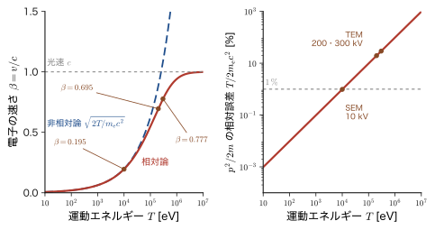
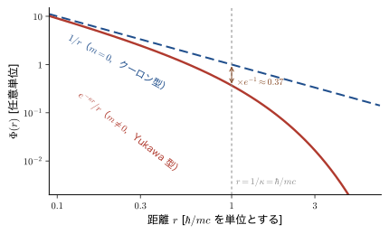
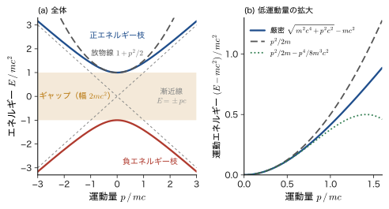
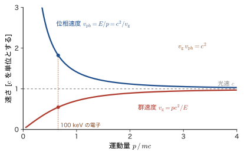
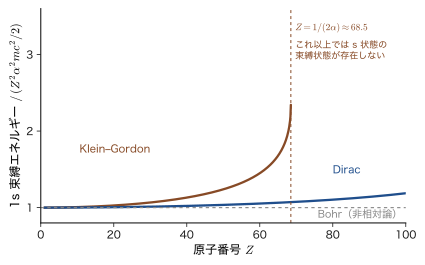
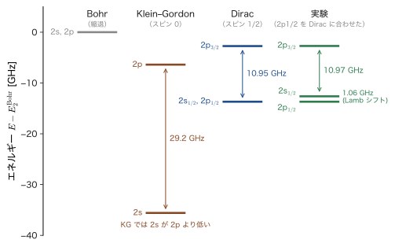

第61章Klein–Gordon 方程式 — 相対論的な波動方程式の最初の試み
第XI部 相対論的量子力学 この部は，本書の最後の部である．ここまでの 60 章で使ってきた Schrödinger（シュレーディンガー）方程式は，光の速さ $c$ にくらべてずっとゆっくり動く粒子のための方程式だった．材料の性質を決める価電子のエネルギーは eV の程度で，電子の静止エネルギー $m_{\mathrm e}c^2=511\ \mathrm{keV}$ の $10^{-5}$ 倍にすぎないから，それで十分だったのである．しかし，次のような場面では，Schrödinger 方程式だけでは足りなくなる．(i) 電子顕微鏡（加速電圧 $200\ \mathrm{kV}$）の電子線は光速の約 70 % で飛ぶ．(ii) 金・水銀・鉛のような重い元素では，内側の電子の速さが光速の半分を超え，金属の色や融点，電池の電圧にまで相対論の効果が現れる．(iii) 電子のスピン，$g$ 因子が 2 であること，スピン軌道相互作用は，非相対論の理論では「あとから付け足すもの」だったが，相対論的な方程式からは自然に出てくる．(iv) 電子と同じ質量で電荷が逆の粒子（陽電子，反粒子）が存在する．第XI部は，これらを一つずつ説明し，素粒子物理学（AD 09）への土台をつくる．
この部の見取り図を先に示しておこう．
- 第61章（本章）Klein–Gordon 方程式：$E^2=p^2c^2+m^2c^4$ をそのまま演算子にした最初の相対論的波動方程式．Lorentz 不変で，非相対論の極限では Schrödinger 方程式に戻り，水素型原子については Bohr の準位と，その $(Z\alpha)^2$ 倍程度の相対論補正という大きさの見当を与える．しかし確率密度が負になり，電子のスピンが出てこないので，微細構造の中身（2s と 2p の順序，$j$ による分裂）は再現できない．うまくいかない理由を知ることが，次の章への動機になる．
- 第62章 Dirac 方程式：平方根を行列でとり，時間について 1 階の方程式にする．スピン $1/2$ が自然に現れる．
- 第63章 Dirac 方程式の非相対論的極限：Pauli 方程式，$g=2$，水素の微細構造，重い元素の相対論効果．第IV部（第26章）で発見的に導いたスピン軌道相互作用を，方程式から厳密に導く．
- 第64章 空孔理論と反粒子：負エネルギー解の読み方，陽電子の予言と発見，Klein のパラドックス．
- 第65章 場の量子論と素粒子物理学への道：粒子数が変わる世界，力を媒介する粒子，QED の入口，固体の中の Dirac 電子．
前の部とのつながりも確認しておく．第X部（第56章〜第60章）では，粒子の数が変わる現象を，生成・消滅演算子で書く方法を学んだ．本章で見る Klein–Gordon 方程式の困難（確率密度が負になること）は，まさに「1 個の粒子の波動関数だけでは，粒子数が変わる現象を扱えない」ことの現れであり，その本当の解決は第65章で第X部の道具を使って与えられる．また，第IV部（第23章〜第26章）で導入したスピンとスピン軌道相互作用は，「なぜ電子にはスピンがあるのか」を問わずに出発点としたものだったが，第62章・第63章でその答えが得られる．
本章は，この部の最初の章として，相対論的な波動方程式の最初の試みである Klein–Gordon（クライン–ゴルドン）方程式を，Schrödinger 方程式をつくったときと同じやり方で導き，「何がうまくいき，何がうまくいかないか」を，電子線の波長，1s 電子の速さ，水素型原子の準位といった具体的な数値で確かめる．結局この方程式は電子に対しては使えないが，スピンをもたない粒子（π 中間子，K 中間子，Higgs 粒子など）の方程式として，今も素粒子物理学で使われている．また，自然単位系 $\hbar=c=1$ にも慣れておく．
- Schrödinger 方程式が Galilei 変換では形を保つが Lorentz 変換では保たないことを，位相因子の計算で確かめ，相対論の効きめの物差し $v/c=Z\alpha$ と電子線の波長（電子顕微鏡）で「どこから相対論が必要か」を数値で判断できること
- $E^2=p^2c^2+m^2c^4$ から Klein–Gordon 方程式 $(\Box+m^2c^2/\hbar^2)\psi=0$ をつくり，非相対論の極限で Schrödinger 方程式に戻ることを行を飛ばさずに導けること，静的な解が湯川型 $e^{-\kappa r}/r$ になること
- 平面波解から分散関係 $\hbar\omega=\pm\sqrt{\hbar^2c^2k^2+m^2c^4}$ と群速度 $v_{\mathrm g}=pc^2/E$・位相速度 $v_{\mathrm{ph}}=E/p$（$v_{\mathrm g}v_{\mathrm{ph}}=c^2$）を求め，負エネルギー枝がなぜ現れるかを説明できること
- 連続の式 $\partial_t\rho+\nabla\cdot\bm{j}=0$ を導き，なぜ $\rho$ が確率密度になれないのか，Pauli–Weisskopf の読み替えで何が救われるのかを説明できること
- 電磁場中の方程式（最小結合）を Coulomb 場で解いて水素型原子の準位 $E_{nl}$ を求め，水素 $n=2$ の準位を実験と比べて「スピンがないと何が合わないか」を言えること
- 自然単位系 $\hbar=c=1$ での換算（$\hbar c=197.327\ \mathrm{MeV\,fm}$）と，SI への復元の手順を使えること
もとにしたノート：望月泰英『物理学ノート 量子力学3』 pp. 73–74．ノートには章扉の見出し「相対論的量子力学」が書かれているだけ（p. 74 は白紙）なので，本章は標準的な教科書の内容で補った．関連シミュレーター：相対論的量子力学シミュレーター（①で Schrödinger・Klein–Gordon・Dirac の分散関係を並べて比べられる）．解説は 相対論的量子力学の解説（§1 Lorentz 対称性，§2 Klein–Gordon 方程式），電子の位置決定の限界（Compton 波長，対生成）は 素粒子の解説（§6.2）．
61.1 なぜ相対論的な量子力学が要るのか — Schrödinger 方程式の限界と第XI部の地図
61.1.1 Schrödinger 方程式は何を仮定していたか
Schrödinger 方程式は，粒子のエネルギーと運動量の関係 $E=p^2/2m+V$ に，対応原理の置き換え $E\to i\hbar\,\partial/\partial t$，$\bm{p}\to-i\hbar\nabla$ を行ってつくった（第9章 9.1）．その結果が
\begin{equation} i\hbar\,\frac{\partial\Psi}{\partial t}=-\frac{\hbar^2}{2m}\nabla^2\Psi+V\Psi \label{eq:61-tdse} \end{equation}である．この式には，古典物理の仮定がはっきり二つ入っている．第一に，運動エネルギーを Newton 力学の $p^2/2m$ で書いたこと．これは，粒子の速さ $v$ が光速 $c$ よりずっと小さいときの近似で，特殊相対論では運動エネルギーは $T=\sqrt{p^2c^2+m^2c^4}-mc^2$ であり，$p\ll mc$ のときだけ $p^2/2m$ に近づく（AD 03 第57章 57.6）．第二に，方程式が時間については 1 階，空間については 2 階の微分しか含まないこと．相対論では時間と空間は Lorentz 変換で混ざり合い，対等に扱われるはずだから，この非対称は相対論と相容れそうにない．以下で，この「相容れなさ」を具体的に確かめよう．
61.1.2 Galilei 変換では形を保ち，Lorentz 変換では保たない
座標系 S に対して，座標系 S′ が $x$ 軸方向に一定の速さ $v$ で動いているとする．Galilei 変換は $x'=x-vt$，$t'=t$ である（AD 03 第54章 54.1）．自由粒子（$V=0$）の 1 次元の Schrödinger 方程式を考える．S′ で観測する人が，波動関数 $\Psi'(x',t')$ が
\begin{equation} i\hbar\,\frac{\partial\Psi'}{\partial t'}=-\frac{\hbar^2}{2m}\frac{\partial^2\Psi'}{\partial x'^2} \label{eq:61-free-S'} \end{equation}を満たすと記述したとき，S で観測する人は同じ状態をどのような波動関数で記述し，その波動関数は S でも同じ形の方程式を満たすだろうか．
定理61.1 Schrödinger 方程式の Galilei 不変性
$\Psi'(x',t')$ が式 \eqref{eq:61-free-S'} を満たすとき，
\begin{equation} \Psi(x,t)=\exp\!\left[\frac{i}{\hbar}\left(mvx-\frac{1}{2}mv^2t\right)\right]\Psi'(x-vt,\,t) \label{eq:61-galilei} \end{equation}は，S での方程式 $i\hbar\,\partial_t\Psi=-(\hbar^2/2m)\,\partial_x^2\Psi$ を満たす．位相因子がなければ満たさない．
導出
位相を $\theta=(mvx-\tfrac12mv^2t)/\hbar$ とおき，$\Psi=e^{i\theta}\,\Psi'(x',t)$，$x'=x-vt$ を，S の変数 $(x,t)$ で微分する．$\Psi'$ は $x'$ と $t$ の関数で，$x'$ が $x$ と $t$ に依存するから，連鎖律（合成関数の微分）により，$\Psi'$ の $x$ による偏微分は $\partial_{x'}\Psi'$，$t$ による偏微分は $\partial_t\Psi'-v\,\partial_{x'}\Psi'$ となる（ここで $\partial_t\Psi'$ は $x'$ を固定した偏微分）．また $\partial_x\theta=mv/\hbar$，$\partial_t\theta=-mv^2/(2\hbar)$ である．
時間微分：
$$ \frac{\partial\Psi}{\partial t}=e^{i\theta}\left[-\frac{imv^2}{2\hbar}\Psi'+\partial_t\Psi'-v\,\partial_{x'}\Psi'\right] $$より，両辺に $i\hbar$ を掛けて
$$ i\hbar\frac{\partial\Psi}{\partial t}=e^{i\theta}\left[\frac{mv^2}{2}\Psi'+i\hbar\,\partial_t\Psi'-i\hbar v\,\partial_{x'}\Psi'\right]. $$空間微分：$\partial_x\Psi=e^{i\theta}\left[\dfrac{imv}{\hbar}\Psi'+\partial_{x'}\Psi'\right]$ をもう一度微分すると
$$ \frac{\partial^2\Psi}{\partial x^2}=e^{i\theta}\left[-\frac{m^2v^2}{\hbar^2}\Psi'+\frac{2imv}{\hbar}\partial_{x'}\Psi'+\partial_{x'}^2\Psi'\right] $$となるから，
$$ -\frac{\hbar^2}{2m}\frac{\partial^2\Psi}{\partial x^2}=e^{i\theta}\left[\frac{mv^2}{2}\Psi'-i\hbar v\,\partial_{x'}\Psi'-\frac{\hbar^2}{2m}\partial_{x'}^2\Psi'\right]. $$この 2 式の差をとると，$\dfrac{mv^2}{2}\Psi'$ の項と $-i\hbar v\,\partial_{x'}\Psi'$ の項はどちらも打ち消し合い，
$$ i\hbar\frac{\partial\Psi}{\partial t}+\frac{\hbar^2}{2m}\frac{\partial^2\Psi}{\partial x^2}=e^{i\theta}\left[i\hbar\,\partial_t\Psi'+\frac{\hbar^2}{2m}\partial_{x'}^2\Psi'\right] $$が残る．右辺の括弧の中は，式 \eqref{eq:61-free-S'} により $0$ である．よって左辺も $0$ で，$\Psi$ は S での自由粒子の方程式を満たす．位相因子を付けなければ，$-i\hbar v\,\partial_{x'}\Psi'$ の項が残ってしまい，等式が成り立たない．
（導出終わり）
イメージ：位相因子は「エネルギーと運動量の変換」そのもの
位相因子の意味を，平面波で確かめよう．S′ での平面波 $\Psi'=e^{i(k'x'-\omega't')}$（$\hbar\omega'=\hbar^2k'^2/2m$）に式 \eqref{eq:61-galilei} を適用すると，$x'=x-vt$ を使って
$$ \Psi=\exp\!\left[i\left(\Bigl(k'+\frac{mv}{\hbar}\Bigr)x-\Bigl(\omega'+k'v+\frac{mv^2}{2\hbar}\Bigr)t\right)\right] $$となる．S での波数は $k=k'+mv/\hbar$，角振動数は $\omega=\omega'+k'v+mv^2/(2\hbar)$ である．$\hbar$ を掛けると，運動量は $p=p'+mv$，エネルギーは $E=E'+p'v+\tfrac12mv^2$ で，これはまさに Newton 力学の Galilei 変換（$p=p'+mv$ のとき $p^2/2m=p'^2/2m+p'v+mv^2/2$）である．位相因子は，この変換を波動関数に実行する「補正」に当たり，$\hbar\omega=\hbar^2k^2/2m$ の関係が S でも保たれる．確率密度 $\abs{\Psi}^2=\abs{\Psi'(x-vt,t)}^2$ は位相因子の影響を受けず，分布がそのまま速さ $v$ で動くように見える．一方，de Broglie 波長 $2\pi\hbar/p$ は観測者によって変わる（演習61.2）．
次に，Lorentz 変換 $x'=\gamma_{\mathrm L}(x-vt)$，$t'=\gamma_{\mathrm L}(t-vx/c^2)$，$\gamma_{\mathrm L}=1/\sqrt{1-v^2/c^2}$ を同じ方程式に適用してみる（AD 03 第54章 54.5．Lorentz 因子は本書では $\gamma_{\mathrm L}$ と書く．61.1.6 節）．連鎖律により，
\begin{equation} \frac{\partial}{\partial x}=\gamma_{\mathrm L}\left(\frac{\partial}{\partial x'}-\frac{v}{c^2}\frac{\partial}{\partial t'}\right),\qquad \frac{\partial}{\partial t}=\gamma_{\mathrm L}\left(\frac{\partial}{\partial t'}-v\frac{\partial}{\partial x'}\right) \label{eq:61-lorentz-d} \end{equation}である．したがって
$$ \frac{\partial^2}{\partial x^2}=\gamma_{\mathrm L}^2\left[\frac{\partial^2}{\partial x'^2}-\frac{2v}{c^2}\frac{\partial^2}{\partial x'\,\partial t'}+\frac{v^2}{c^4}\frac{\partial^2}{\partial t'^2}\right] $$となり，S′ で書いた方程式の右辺には，もとの方程式になかった $\partial_{x'}\partial_{t'}$ の項と，時間の 2 階微分 $\partial_{t'}^2$ の項が現れる．位相因子 $e^{i\theta}$ を掛けても，現れるのは 1 階以下の微分の項（$\Psi'$ の係数の項）だけで，$\partial_{t'}^2$ の項は消せない．つまり，Schrödinger 方程式は Lorentz 変換では形を保てない． 平面波でも確かめられる．平面波 $e^{i(kx-\omega t)}$ の位相は観測者によらない値（スカラー）なので，$(\omega/c,\,k)$ は $(ct,\,x)$ と同じ Lorentz 変換を受ける 2 成分の量で，その間には $\omega^2/c^2-k^2$ が不変に保たれるという関係がある．もし Schrödinger 方程式が形を保つなら，S の平面波 $(\omega,k)$ も S′ の平面波 $(\omega',k')$ も放物線 $\omega=\hbar k^2/2m$ の上になければならない．ところが放物線の上では $\omega^2/c^2-k^2=\hbar^2k^4/(4m^2c^2)-k^2$ が $k$ とともに変わり，これが $k$ と $k'$ で等しくなるのは $k'=\pm k$ のときだけである．よって $v\ne0$ の Lorentz 変換とは両立しない．形が保たれるのは $c\to\infty$ の極限（$\gamma_{\mathrm L}\to1$，$v/c^2\to0$）だけで，そこでは Lorentz 変換が Galilei 変換に一致する（AD 03 第54章 54.6）．
注意：「形が変わる」ことが「間違い」の意味
相対性原理は，物理法則の形がすべての慣性系で同じであることを要求する．自然は Lorentz 変換に対して対称であることが実験で確かめられている（Michelson–Morley の実験など．AD 03 第54章 54.3）．したがって，Lorentz 変換で形が変わる Schrödinger 方程式は，$v\ll c$ で成り立つ近似の方程式であって，厳密な方程式ではない．近似がどこまで良いかを次の節で数値で見る．
61.1.3 相対論の効きめの物差し — 1s 電子の速さ $v/c=Z\alpha$
相対論が効くかどうかは，粒子の速さが光速の何割かで決まる．原子の中の電子の速さを見積もろう．原子番号 $Z$ の水素型原子の 1s 状態のエネルギーは $E_{1\mathrm{s}}=-Z^2\times13.606\ \mathrm{eV}$ で，これは $-\tfrac12Z^2\alpha^2m_{\mathrm e}c^2$ と書ける．ここで
\begin{equation} \alpha=\frac{e_0^2}{4\pi\varepsilon_0\hbar c}=\frac{1}{137.036} \label{eq:61-alpha} \end{equation}は微細構造定数（fine-structure constant）で，電子と原子核の間の電磁相互作用の強さを表す無次元の数である．（添字のない $\alpha$ は本書ではこの定数を表す．Dirac 行列 $\alpha_i$ やスピン関数 $\alpha$ とは別のものである．61.1.6 節の囲みで整理する．）
Coulomb ポテンシャルの中の束縛状態では，ビリアル定理（第17章 17.4）により運動エネルギーの平均値は $\expval{T}=-E_{1\mathrm{s}}=\tfrac12Z^2\alpha^2m_{\mathrm e}c^2$ である．これを $\tfrac12m_{\mathrm e}\expval{v^2}$ と等しいとおくと $\expval{v^2}=Z^2\alpha^2c^2$，すなわち 1s 電子の速さ（2 乗平均の平方根）は
となる．$Z$ が大きい原子ほど，内側の電子は光速に近い速さで動く．表61.1 に代表的な元素の値を示す．$\gamma_{\mathrm L}=1/\sqrt{1-(Z\alpha)^2}$ は Lorentz 因子で，質量が静止質量の何倍に見えるかを表す．
| 元素 | $Z$ | $Z\alpha=v/c$ | $\gamma_{\mathrm L}=1/\sqrt{1-(Z\alpha)^2}$ |
|---|---|---|---|
| H | 1 | $0.0073$ | $1.00003$ |
| C | 6 | $0.044$ | $1.001$ |
| Fe | 26 | $0.190$ | $1.018$ |
| Ag | 47 | $0.343$ | $1.065$ |
| Au | 79 | $0.576$ | $1.224$ |
| Hg | 80 | $0.584$ | $1.232$ |
| Pb | 82 | $0.598$ | $1.248$ |
| U | 92 | $0.671$ | $1.349$ |
例題61.1 1s 電子の速さと質量の増加
式 \eqref{eq:61-vc} を使って，Fe，Au，U の 1s 電子の $v/c$ と $\gamma_{\mathrm L}$ を求めよ．Au で 1s 電子の質量は静止質量の何 % 増えて見えるか．また，この見積もりはどの程度信頼できるか．
解答 $\alpha=1/137.036=7.2974\times10^{-3}$ を使う．
Fe（$Z=26$）：$Z\alpha=26\times7.2974\times10^{-3}=0.1897$．$(Z\alpha)^2=0.03600$ より $\gamma_{\mathrm L}=1/\sqrt{1-0.03600}=1/\sqrt{0.96400}=1/0.98184=1.0185$．
Au（$Z=79$）：$Z\alpha=79\times7.2974\times10^{-3}=0.5765$．$(Z\alpha)^2=0.3323$ より $\gamma_{\mathrm L}=1/\sqrt{1-0.3323}=1/\sqrt{0.6677}=1/0.8171=1.224$．
U（$Z=92$）：$Z\alpha=92\times7.2974\times10^{-3}=0.6714$．$(Z\alpha)^2=0.4507$ より $\gamma_{\mathrm L}=1/\sqrt{1-0.4507}=1/\sqrt{0.5493}=1/0.7411=1.349$．
Au の 1s 電子は光速の約 58 % で動き，質量は $\gamma_{\mathrm L}-1=0.224$，すなわち約 22 % 増えて見える．質量が増えれば軌道は内側に引き寄せられ（軌道の大きさは質量に反比例する），エネルギーも非相対論の値から大きくずれる．ただし，この見積もりは「非相対論の波動関数から求めた $\expval{v^2}$ に $\gamma_{\mathrm L}$ の式を当てはめた」粗いものである．$Z\alpha$ が大きくなると，相対論を正しく取り入れた結果とは細部で違いが出る．正確な扱いは第63章で行う．それでも，「Fe までは 2 % 以下，Au・Hg・Pb・U では 2 割以上の補正が必ず必要になる」という見通しは変わらない．
応用：重い元素の物性と相対論
内殻の電子の速さが光速に近いと，内殻だけでなく，s 軌道全体が縮み，その結果，d・f 軌道は逆に遮蔽が強まって広がる．この効果が，金の色（金が黄色く見えること），水銀が室温で液体であること，鉛蓄電池の電圧の大きな部分などを説明することが，第63章で示される．一方，軽元素（C，N，O，Si など）の価電子では，運動エネルギー（$10\ \mathrm{eV}$ 程度）と静止エネルギー $511\ \mathrm{keV}$ の比が $10^{-5}$ の桁で，速さも $v/c\approx Z_{\mathrm{eff}}\alpha/n\lesssim0.01$（C の 2p 電子で $Z_{\mathrm{eff}}\approx3$ とすると約 $0.01$）である．質量速度補正の相対値は $(v/c)^2\approx10^{-5}\sim10^{-4}$ にとどまり，結合エネルギーや格子定数の議論には Schrödinger 方程式で十分である．量子ドットのように $\mathrm{meV}$ の程度の閉じ込めエネルギーの電子では，補正はさらに小さく $10^{-8}$ の桁になる（例題61.6）．重い元素を含む系の精密な計算では，相対論的有効内殻ポテンシャル（ECP）や ZORA といった近似で相対論の効果を取り入れる．Dirac 方程式とスピノルの発展的な扱いは AD 05 の第7章 7.10 にある．なお，鉛蓄電池の電圧の大きな部分が相対論の効果で説明されることは，Ahuja らが第一原理計算で示した（巻末の参考文献）．
61.1.4 電子線の波長 — 加速電圧が高いと相対論が必要になる
もう一つの具体例として，電子顕微鏡の電子線を考える．電子を電圧 $U$ で加速すると，運動エネルギーは $T=e_0U$ になる．de Broglie の関係 $\lambda=h/p$ に入れる運動量 $p$ を，非相対論では $p=\sqrt{2m_{\mathrm e}T}$ と書いたが（第6章 6.3），相対論では全エネルギー $E=T+m_{\mathrm e}c^2$ と運動量が $E^2=(pc)^2+(m_{\mathrm e}c^2)^2$ の関係にある（AD 03 第57章 57.5）．これから $(pc)^2=(T+m_{\mathrm e}c^2)^2-(m_{\mathrm e}c^2)^2$，すなわち
\begin{equation} (pc)^2=T\,(T+2m_{\mathrm e}c^2),\qquad \lambda=\frac{h}{p}=\frac{hc}{\sqrt{T\,(T+2m_{\mathrm e}c^2)}}=\frac{h}{\sqrt{2m_{\mathrm e}T\left(1+\dfrac{T}{2m_{\mathrm e}c^2}\right)}} \label{eq:61-lam} \end{equation}である．$T\ll2m_{\mathrm e}c^2$ なら括弧の中は 1 に近く，非相対論の式 $\lambda_{\mathrm{nr}}=h/\sqrt{2m_{\mathrm e}T}$ に戻る．つまり補正の大きさは $T/(2m_{\mathrm e}c^2)$ で決まる．非相対論の波長の数値は，$T=e_0U$ を $\lambda_{\mathrm{nr}}=h/\sqrt{2m_{\mathrm e}T}$ に入れ，$h$，$m_{\mathrm e}$，$e_0$ の値を代入して $\lambda_{\mathrm{nr}}=h/\sqrt{2m_{\mathrm e}e_0U}=1.2264\ \mathrm{nm}/\sqrt{U/(1\ \mathrm{V})}$ となる．速さは $\beta=v/c=pc/E$，Lorentz 因子は $\gamma_{\mathrm L}=1+T/(m_{\mathrm e}c^2)$ で，$p=\gamma_{\mathrm L}\beta m_{\mathrm e}c$ だから $\lambda=h/(\gamma_{\mathrm L}\beta m_{\mathrm e}c)$ とも書ける．
例題61.2 走査・透過電子顕微鏡の電子線の波長
加速電圧 $10\ \mathrm{kV}$（走査電子顕微鏡 SEM），$100\ \mathrm{kV}$，$200\ \mathrm{kV}$，$300\ \mathrm{kV}$（透過電子顕微鏡 TEM）の電子について，$\gamma_{\mathrm L}$，$\beta$，非相対論の波長 $\lambda_{\mathrm{nr}}$，式 \eqref{eq:61-lam} の波長 $\lambda$ を求め，非相対論の式のずれを調べよ．
解答 $200\ \mathrm{kV}$ を詳しく計算する．$m_{\mathrm e}c^2=510.999\ \mathrm{keV}$，$T=200\ \mathrm{keV}$．$\gamma_{\mathrm L}=1+200/510.999=1.3914$，$\beta=\sqrt{1-1/\gamma_{\mathrm L}^2}=\sqrt{1-0.5165}=0.6953$．非相対論の波長は $\lambda_{\mathrm{nr}}=1.2264\ \mathrm{nm}/\sqrt{200\,000}=1.2264/447.21\ \mathrm{nm}=2.742\ \mathrm{pm}$ である．補正因子は $T/(2m_{\mathrm e}c^2)=200/1022.0=0.1957$ より $\sqrt{1.1957}=1.0935$ で，$\lambda=\lambda_{\mathrm{nr}}/1.0935=2.508\ \mathrm{pm}$ を得る．別の式 $\lambda=h/(\gamma_{\mathrm L}\beta m_{\mathrm e}c)$ でも，$h/(m_{\mathrm e}c)=2.4263\ \mathrm{pm}$（Compton 波長）を $\gamma_{\mathrm L}\beta=1.3914\times0.6953=0.9675$ で割って $2.508\ \mathrm{pm}$ となり，一致する．非相対論の式は $(2.742-2.508)/2.508=0.093$，すなわち約 9 % 長めに出る．なお，図61.1（右）の誤差 $T/(2m_{\mathrm e}c^2)=0.196$（約 20 %）は，運動エネルギーの式 $p^2/2m_{\mathrm e}$ の誤差である．波長は $\lambda\propto1/p$ で，補正因子が平方根 $\sqrt{1.196}=1.094$ の形で効くので，波長の誤差は約 9 % と，およそ半分になる（61.3.3 節）．
他の電圧も同様に計算した結果を表61.2 にまとめる．
| 加速電圧 | $\gamma_{\mathrm L}$ | $\beta=v/c$ | $\lambda_{\mathrm{nr}}$ | $\lambda$ | $(\lambda_{\mathrm{nr}}-\lambda)/\lambda$ |
|---|---|---|---|---|---|
| $10\ \mathrm{kV}$ | $1.0196$ | $0.1950$ | $12.264\ \mathrm{pm}$ | $12.205\ \mathrm{pm}$ | $0.49\ \%$ |
| $100\ \mathrm{kV}$ | $1.1957$ | $0.5482$ | $3.878\ \mathrm{pm}$ | $3.701\ \mathrm{pm}$ | $4.8\ \%$ |
| $200\ \mathrm{kV}$ | $1.3914$ | $0.6953$ | $2.742\ \mathrm{pm}$ | $2.508\ \mathrm{pm}$ | $9.3\ \%$ |
| $300\ \mathrm{kV}$ | $1.5871$ | $0.7765$ | $2.239\ \mathrm{pm}$ | $1.969\ \mathrm{pm}$ | $13.7\ \%$ |
$10\ \mathrm{kV}$ の SEM の電子でも速さは光速の約 20 % で，非相対論の波長は 0.5 % ずれる（運動エネルギーの式 $p^2/2m$ のずれは約 1 %，図61.1 右）．TEM の $200\ \mathrm{kV}$ では電子は光速の約 70 % で飛び，相対論の補正なしの波長は約 9 % も誤る．電子線回折の解析や高分解能像のシミュレーションでは，この補正が必須である．運動エネルギー $T$ に対する速さ $\beta$ と非相対論の誤差の関係を，図61.1 に示す．

61.1.5 相対論的な方程式への 3 つの道 — 第XI部の地図
関係式 $E^2=p^2c^2+m^2c^4$ から出発して，Schrödinger 方程式をつくったのと同じやり方で波動方程式をつくるには，次の 3 つの考え方がある．
- 2 乗のまま演算子にする：$E\to i\hbar\partial_t$，$\bm{p}\to-i\hbar\nabla$ を $E^2=p^2c^2+m^2c^4$ にそのまま代入する．得られるのが Klein–Gordon 方程式で，本章で扱う．時間について 2 階の方程式で，スピン $0$ の粒子に対応する．
- 平方根を行列でとる：$E=\sqrt{p^2c^2+m^2c^4}$ の平方根を，行列 $\bm\alpha$，$\beta$ を使って $E=c\bm\alpha\cdot\bm{p}+\beta mc^2$ と，$\bm{p}$ の 1 次式にする．時間について 1 階の Dirac 方程式になり，スピン $1/2$ が自動的に入る（第62章・第63章）．
- 粒子数が変わる世界として捉え直す：どちらの方程式も，1 個の粒子の波動関数の方程式として読むと，負のエネルギーの解が現れる．これは，相対論では粒子が生成・消滅する（エネルギー $2mc^2$ 以上あれば粒子と反粒子の対ができる）ことの現れで，波動関数ではなく場の演算子で理論を書く必要がある（第64章・第65章）．第X部の生成・消滅演算子の考え方がここで生きる．
図61.2 に，第XI部全体の地図を示す．
61.1.6 第XI部の記号の約束
第XI部の記号の約束
- $\hbar$ と $c$ を残す．式には原則として $\hbar$，$c$ を書く．自然単位系 $\hbar=c=1$ への切り替えは，61.6 節で換算表を示し，第65章で行う．
- 計量と 4 元ベクトル：計量は $(+,-,-,-)$，$x^\mu=(ct,\bm{x})=(ct,x,y,z)$，$\partial_\mu=\dfrac{\partial}{\partial x^\mu}=\left(\dfrac{1}{c}\dfrac{\partial}{\partial t},\,\nabla\right)$（AD 03 第VIII部と同じ）．ダランベルシアンは $$\Box\equiv\partial_\mu\partial^\mu=\frac{1}{c^2}\frac{\partial^2}{\partial t^2}-\nabla^2$$ である．他書には $\Box=\nabla^2-\dfrac1{c^2}\partial_t^2$ と逆符号で定義するものがあるので，比べるときは注意する．
- 電気素量と電荷：電気素量は $e_0=1.602\,176\,634\times10^{-19}\ \mathrm{C}$（AD 03 の $e$ と同じ量．$e$ は Napier 数のためにとっておく）．電子の電荷は $q=-e_0$．電位は $\varphi_{\mathrm{el}}$（AD 03 の $\varphi$ と同じ量．方位角 $\varphi$ と区別する），静電ポテンシャルエネルギーは $V=q\varphi_{\mathrm{el}}$．
- $\alpha$ の 3 つの意味を区別する：(i) 添字のない $\alpha=e_0^2/(4\pi\varepsilon_0\hbar c)\approx1/137$ は微細構造定数．(ii) 添字つき $\alpha_i$（$i=x,y,z$ または $1,2,3$），またはベクトル $\bm\alpha$ は Dirac 行列（第62章）．(iii) 第IV部以降の $\alpha,\beta$ は $\ket{\uparrow},\ket{\downarrow}$ を表すスピン関数．Dirac 行列の $\beta$ と共鳴積分 $\beta$（第40章）も無関係である．本章では，速さの比 $v/c$ も $\beta$ と書く（61.1.4，61.3）．61.5 の動径方程式では，混同を避けて別の記号 $\eta$ を使う．第XI部のスピン状態は $\uparrow$，$\downarrow$ または $\chi_\uparrow$，$\chi_\downarrow$ と書く．
- Lorentz 因子：$\gamma_{\mathrm L}=1/\sqrt{1-v^2/c^2}=E/(m_{\mathrm e}c^2)$ と書く（AD 03 第54章以降の $\gamma$ と同じ量）．Dirac の $\gamma^\mu$ 行列（第62章）や，第63章で Dirac 方程式の 1s 状態の動径関数の指数として現れる $\gamma=\sqrt{1-(Z\alpha)^2}$ と区別するためである．後者は前者とは別の量で，1s 電子の速さを Bohr 模型の $v=Z\alpha c$ で見積もると $\gamma=1/\gamma_{\mathrm L}$ の関係になる（表61.1 と表63.5 を見比べるときに注意する）．なお光子は $\gamma$ と書く（第64章）．
- 複数の意味をもつ文字：$\kappa$ は第61章では減衰定数（61.2.2 の $mc/\hbar$．束縛状態の動径方程式では $\kappa_b$），第63章では Dirac 方程式の角運動量の量子数である．$\eta$ は 61.5 では Coulomb 結合の強さを表すパラメーター，第62章ではラピディティ，第63章では Dirac の動径方程式の係数，第64章では演算子 $\eta_0$ である．$T$ は第61章では運動エネルギー，第64章では透過率である．どの意味かは，その章の定義の直前で断る．
- 電圧・体積・ポテンシャル：加速電圧は $U$，箱の体積は $L^3$ とし，$V$ はポテンシャルエネルギー（$V=q\varphi_{\mathrm{el}}$）だけに使う．
- 波動関数：Klein–Gordon 方程式の波動関数は $\psi(\bm{r},t)$ または $\psi(x)$（$x=x^\mu$）と書く（スカラー）．Schrödinger 方程式の波動関数 $\Psi(\bm{r},t)$ と区別する．
61.2 Klein–Gordon 方程式をつくる — $E^2=p^2c^2+m^2c^4$ の演算子化
61.2.1 関係式を演算子に置き換える
Schrödinger 方程式は，関係式 $E=p^2/2m+V$ の両辺を波動関数に作用させ，$E\to i\hbar\partial_t$，$\bm{p}\to-i\hbar\nabla$ とすることでつくった．同じことを相対論の関係式
\begin{equation} E^2=p^2c^2+m^2c^4 \label{eq:61-disp-class} \end{equation}に対して行ってみよう（$m$ は粒子の質量，$p=\abs{\bm{p}}$）．$E^2$ は「$E$ を 2 回作用させる」こと，$p^2=\bm{p}\cdot\bm{p}$ は「$\bm{p}$ を 2 回作用させて内積をとる」ことだから，$E^2\to(i\hbar\partial_t)^2=-\hbar^2\partial_t^2$，$p^2\to(-i\hbar\nabla)\cdot(-i\hbar\nabla)=-\hbar^2\nabla^2$ となり，
\begin{equation} -\hbar^2\frac{\partial^2\psi}{\partial t^2}=-\hbar^2c^2\nabla^2\psi+m^2c^4\psi \label{eq:61-kg-raw} \end{equation}が得られる．両辺を $\hbar^2c^2$ で割って移項すると
\begin{equation} \frac{1}{c^2}\frac{\partial^2\psi}{\partial t^2}-\nabla^2\psi+\frac{m^2c^2}{\hbar^2}\,\psi=0 \label{eq:61-kg-explicit} \end{equation}である．各項の次元は $[\psi]/\mathrm{m}^2$ に揃っている（$m^2c^2/\hbar^2=(m c/\hbar)^2$ は $(\mathrm{kg\cdot m/s}\,/\,\mathrm{J\,s})^2=\mathrm{m}^{-2}$）．
同じ式を，相対論の 4 元形式で書くともっと簡潔になる．4 元運動量は $p^\mu=(E/c,\bm{p})$ で，関係式 \eqref{eq:61-disp-class} は $p_\mu p^\mu=m^2c^2$ と同じことである（AD 03 第57章 57.5）．置き換えの規則は，成分で書けば $E/c\to i\hbar\,\dfrac1c\partial_t$，$\bm{p}\to-i\hbar\nabla$ である．$\partial^\mu=\left(\dfrac1c\partial_t,\,-\nabla\right)$ だから，これは 1 行で $p^\mu\to i\hbar\,\partial^\mu$ と書ける．すると $p_\mu p^\mu=m^2c^2$ は $-\hbar^2\partial_\mu\partial^\mu\psi=m^2c^2\psi$，すなわち $-\hbar^2\Box\psi=m^2c^2\psi$ となる．
法則61.1 Klein–Gordon 方程式
質量 $m$ の，スピンをもたない自由な粒子の波動関数 $\psi(x)$ は，
\begin{equation} \left(\Box+\frac{m^2c^2}{\hbar^2}\right)\psi=0,\qquad \Box=\frac{1}{c^2}\frac{\partial^2}{\partial t^2}-\nabla^2 \label{eq:61-kg} \end{equation}を満たす．これを Klein–Gordon 方程式（Klein–Gordon equation）という．
この方程式は，Klein，Gordon，Fock らが 1926 年に，Schrödinger の論文の直後に独立に提案した．（Schrödinger 自身も，非相対論の方程式をつくる前にこの形を考えたが，水素原子の微細構造に合わなかったので，いったん放棄したといわれる．その理由は 61.5 節で明らかになる．）
なぜ「2 乗のまま」なのか
$E=\sqrt{p^2c^2+m^2c^4}$ の平方根を演算子に置き換えると，$\sqrt{m^2c^4+c^2\hat{\bm{p}}^2}=mc^2\sqrt{1+\hat{\bm{p}}^2/(mc)^2}$ を $\hat{\bm{p}}^2=-\hbar^2\nabla^2$ の巾級数に展開した，無限階の微分を含む演算子になってしまう．これでは，ある点の波動関数の時間変化が，その点の周りのすべての点の波動関数の値に（遠方の値にも）関係する非局所的な方程式になり，時間と空間を対等に扱うという要請とも合わない．Klein–Gordon 方程式は，平方根をとらずに 2 乗のまま置き換えることでこの困難を避けた．一方，Dirac は，平方根を「行列を係数にもつ 1 次式」として厳密にとる別の道を見つけた（第62章）．
この方程式は Lorentz 不変である．$\Box=\partial_\mu\partial^\mu$ は 4 元ベクトル同士の内積だからスカラー演算子で，Lorentz 変換しても形が変わらない（AD 03 第58章 58.2）．したがって，波動関数 $\psi$ がスカラー関数（座標系を変えても値が変わらない：$\psi'(x')=\psi(x)$）であれば，式 \eqref{eq:61-kg} はどの慣性系でも同じ形になる．スカラーであるということは，向きの情報をもたないこと，つまりスピン $0$ の粒子を記述することを意味する．電気的に中性な粒子（$\pi^0$）には実数値の $\psi$ を使うこともできるが，荷電粒子（$\pi^\pm$）では複素数値をとる．
61.2.2 換算 Compton 波長 — 方程式に現れる長さ
式 \eqref{eq:61-kg} の質量の項に現れる $mc/\hbar$ は，長さの逆数の次元をもつ．そこで
\begin{equation} \bar{\lambda}_{\mathrm C}\equiv\frac{\hbar}{mc},\qquad\kappa\equiv\frac{1}{\bar{\lambda}_{\mathrm C}}=\frac{mc}{\hbar} \label{eq:61-compton} \end{equation}とおく．$\bar{\lambda}_{\mathrm C}$ は換算 Compton 波長（reduced Compton wavelength）で，Compton 散乱（第6章 6.1）に現れた Compton 波長 $\lambda_{\mathrm C}=h/(mc)$ を $2\pi$ で割ったものである．電子では $\bar{\lambda}_{\mathrm C}=3.8616\times10^{-13}\ \mathrm{m}=386.16\ \mathrm{fm}$（$\lambda_{\mathrm C}=2.4263\ \mathrm{pm}$）となる．これを使うと方程式は $(\Box+\kappa^2)\psi=0$ と書ける．
$m\to0$（$\kappa\to0$）の極限では，$\Box\psi=0$，つまり波動方程式 $\dfrac{1}{c^2}\partial_t^2\psi=\nabla^2\psi$ に戻る．これは光（電磁波）が満たす方程式で（AD 03 第42章 42.3，AD 02 第43章 43.1），速さ $c$ で伝わる波を表す．質量 $m$ は，この波動方程式に $\kappa^2\psi$ という「復元力」の項を付け加えたものと見ることができる．
例題61.3 Compton 波長と閉じ込めエネルギー
(a) 電子の換算 Compton 波長を求めよ．(b) 電子を大きさ $L$ の領域に閉じ込めたとき，運動量の大きさはおよそ $p\sim\hbar/L$ である（不確定性原理）．$pc$ が $m_{\mathrm e}c^2$ と同程度になる $L$ を求め，その意味を述べよ．(c) 幅 $L=5\ \mathrm{nm}$ の半導体量子ドット（井戸の幅 $L$ の無限井戸で近似する）について，$\hbar c/L$ と基底状態のエネルギー $E_1$ を求め，相対論が必要かどうかを判断せよ．
解答 (a) $\hbar c=197.327\ \mathrm{MeV\,fm}$，$m_{\mathrm e}c^2=0.510999\ \mathrm{MeV}$ を使って，$\bar{\lambda}_{\mathrm C}=\hbar c/(m_{\mathrm e}c^2)=197.327/0.510999\ \mathrm{fm}=386.16\ \mathrm{fm}$．
(b) $pc\sim\hbar c/L=m_{\mathrm e}c^2$ より $L\sim\hbar c/(m_{\mathrm e}c^2)=\bar{\lambda}_{\mathrm C}=386\ \mathrm{fm}$．これは原子の大きさ（$0.5\ \text{Å}=5\times10^4\ \mathrm{fm}$）の 100 分の 1 以下である．電子をこれほど小さい領域に閉じ込めると，運動エネルギーが静止エネルギー以上になり，粒子と反粒子の対をつくるのに必要なエネルギー $2m_{\mathrm e}c^2$ に届く．つまり $\bar{\lambda}_{\mathrm C}$ は，「1 個の粒子」という描像が成り立たなくなる長さのスケールである．
(c) $\hbar c=197.327\ \mathrm{eV\,nm}$ より $\hbar c/L=197.327/5\ \mathrm{eV}=39.5\ \mathrm{eV}$．これは $m_{\mathrm e}c^2=511\ \mathrm{keV}$ の $7.7\times10^{-5}$ 倍にすぎない．無限井戸の基底状態は $E_1=\pi^2\hbar^2/(2m_{\mathrm e}L^2)$（第10章 10.1）で，これを $\hbar c$ を使って書くと $E_1=\dfrac{\pi^2}{2}\dfrac{(\hbar c)^2}{m_{\mathrm e}c^2\,L^2}=4.9348\times\dfrac{(197.327\ \mathrm{eV\,nm})^2}{(5.10999\times10^5\ \mathrm{eV})(5\ \mathrm{nm})^2}=1.504\times10^{-2}\ \mathrm{eV}=15.0\ \mathrm{meV}$ となる．$E_1/(m_{\mathrm e}c^2)=2.9\times10^{-8}$ で，相対論の補正は無視できる．よって量子ドットは Schrödinger 方程式で扱ってよい（例題61.6 で補正の大きさを見積もる）．
61.2.3 非相対論の極限 — Schrödinger 方程式が戻ってくる
Klein–Gordon 方程式は，粒子の速さが遅い極限で Schrödinger 方程式になるはずである．それを確かめよう．粒子の全エネルギーは静止エネルギー $mc^2$ と，残りの部分 $\varepsilon$（非相対論のエネルギー）の和 $E=mc^2+\varepsilon$ である．定常状態の波動関数の時間依存性 $e^{-iEt/\hbar}$ は $e^{-imc^2t/\hbar}\,e^{-i\varepsilon t/\hbar}$ と分けられるので，前者の速い位相（角振動数 $\omega_0=mc^2/\hbar$．電子では $7.76\times10^{20}\ \mathrm{s^{-1}}$）を先に取り出して，
\begin{equation} \psi(\bm{r},t)=e^{-imc^2t/\hbar}\,\phi(\bm{r},t) \label{eq:61-phase} \end{equation}とおく．$\phi$ は，時間変化の角振動数が $\omega_0$ よりずっと小さい，すなわち $\abs{\hbar\,\partial_t\phi}\ll mc^2\abs{\phi}$（運動エネルギーが静止エネルギーよりずっと小さい）関数で，非相対論の波動関数に当たる．
導出：$\phi$ の方程式
$\omega_0=mc^2/\hbar$ とおくと，$\psi=e^{-i\omega_0t}\phi$ の時間微分は，積の微分法則により
$$ \frac{\partial\psi}{\partial t}=e^{-i\omega_0t}\left(\frac{\partial\phi}{\partial t}-i\omega_0\phi\right),\qquad \frac{\partial^2\psi}{\partial t^2}=e^{-i\omega_0t}\left(\frac{\partial^2\phi}{\partial t^2}-2i\omega_0\frac{\partial\phi}{\partial t}-\omega_0^2\phi\right) $$である（2 回目の微分では $-i\omega_0\times(-i\omega_0)=-\omega_0^2$）．空間微分は位相因子に影響されず $\nabla^2\psi=e^{-i\omega_0t}\nabla^2\phi$．これらを式 \eqref{eq:61-kg-explicit} に代入し，共通の因子 $e^{-i\omega_0t}$ を落とすと，
$$ \frac{1}{c^2}\left(\frac{\partial^2\phi}{\partial t^2}-2i\omega_0\frac{\partial\phi}{\partial t}-\omega_0^2\phi\right)-\nabla^2\phi+\frac{m^2c^2}{\hbar^2}\phi=0 $$となる．ここで $m^2c^2/\hbar^2=\omega_0^2/c^2$ だから，$-\omega_0^2\phi/c^2$ と $+m^2c^2\phi/\hbar^2$ は打ち消し合う（静止エネルギーの項が消えた）：
$$ \frac{1}{c^2}\frac{\partial^2\phi}{\partial t^2}-\frac{2i\omega_0}{c^2}\frac{\partial\phi}{\partial t}-\nabla^2\phi=0 $$両辺に $\hbar^2c^2$ を掛け，$\hbar^2\omega_0=\hbar mc^2$ を使うと，$\hbar^2\partial_t^2\phi-2mc^2\cdot i\hbar\,\partial_t\phi-\hbar^2c^2\nabla^2\phi=0$．整理して
\begin{equation} 2mc^2\cdot i\hbar\frac{\partial\phi}{\partial t}-\hbar^2\frac{\partial^2\phi}{\partial t^2}=-\hbar^2c^2\nabla^2\phi \label{eq:61-nr-rows} \end{equation}を得る．両辺を $2mc^2$ で割り，左辺の第 2 項を右辺に移すと，
\begin{equation} i\hbar\frac{\partial\phi}{\partial t}=-\frac{\hbar^2}{2m}\nabla^2\phi+\frac{\hbar^2}{2mc^2}\frac{\partial^2\phi}{\partial t^2} \label{eq:61-nr} \end{equation}（導出終わり）
式 \eqref{eq:61-nr} の右辺の第 1 項は，自由粒子の Schrödinger 方程式の右辺そのものである．第 2 項が相対論の補正である．その大きさを，上の条件を使って見積もろう．$\phi\propto e^{-i\varepsilon t/\hbar}$ とすると $\hbar^2\partial_t^2\phi=-\varepsilon^2\phi$，$i\hbar\partial_t\phi=\varepsilon\phi$ なので，第 2 項と左辺の比は $\dfrac{\hbar^2\partial_t^2/(2mc^2)}{i\hbar\partial_t}\sim\dfrac{\varepsilon}{2mc^2}$，すなわち（運動エネルギー）/（静止エネルギーの 2 倍）程度の小ささである．これを落とせば $i\hbar\partial_t\phi=-(\hbar^2/2m)\nabla^2\phi$，つまり自由粒子の Schrödinger 方程式が得られる．静止エネルギーの位相因子 $e^{-imc^2t/\hbar}$ を外すことは，エネルギーの原点を $mc^2$ だけずらして，非相対論のエネルギー $\varepsilon$ だけを数えることに当たる（エネルギーの原点が任意であることは第9章 9.5で見た）．
例題61.4 平面波で補正の大きさを確かめる
式 \eqref{eq:61-nr} に平面波 $\phi=e^{i(kx-\varepsilon t/\hbar)}$ を代入して $\varepsilon$ と $k$ の関係を求め，$\varepsilon$ を $p=\hbar k$ の巾に展開して，最初の 2 項を書け．
解答 $i\hbar\partial_t\phi=\varepsilon\phi$，$\partial_t^2\phi=-(\varepsilon/\hbar)^2\phi$，$\nabla^2\phi=-k^2\phi$ を式 \eqref{eq:61-nr} に代入すると，$\varepsilon=\dfrac{\hbar^2k^2}{2m}-\dfrac{\varepsilon^2}{2mc^2}$ となる．最低次では $\varepsilon\approx\hbar^2k^2/2m=p^2/2m$ だから，これを右辺の $\varepsilon^2$ に代入して次の補正を求めると，
$$ \varepsilon\approx\frac{p^2}{2m}-\frac{1}{2mc^2}\left(\frac{p^2}{2m}\right)^2=\frac{p^2}{2m}-\frac{p^4}{8m^3c^2}. $$これは，相対論の運動エネルギー $\sqrt{p^2c^2+m^2c^4}-mc^2$ を $p\ll mc$ で展開した $\dfrac{p^2}{2m}-\dfrac{p^4}{8m^3c^2}+\cdots$ の最初の 2 項（Schrödinger の運動エネルギーと質量速度補正）と一致する．正確には，式 $\varepsilon^2+2mc^2\varepsilon-\hbar^2c^2k^2=0$ の解 $\varepsilon=-mc^2\pm\sqrt{m^2c^4+\hbar^2c^2k^2}$ のうち，$+$ の符号の根が上の展開に対応する．$-$ の根は $\varepsilon\approx-2mc^2$ で，$\phi$ が $e^{+2imc^2t/\hbar}$ のように速く振動してしまい，「ゆっくり変化する」という仮定に反するので，Schrödinger 方程式では現れない（負エネルギー解，61.3.4 節）．
61.2.4 静的な解 — 質量が決める力の到達距離
時間変化のない（$\partial_t=0$）解を探す．式 \eqref{eq:61-kg} は
\begin{equation} (\nabla^2-\kappa^2)\,\Phi(\bm{r})=0 \label{eq:61-static} \end{equation}となる．球対称な解 $\Phi(r)$ を求めよう．球対称関数のラプラシアンは，$\nabla^2\Phi=\dfrac{1}{r^2}\dfrac{\dd}{\dd r}\left(r^2\dfrac{\dd\Phi}{\dd r}\right)=\dfrac{\dd^2\Phi}{\dd r^2}+\dfrac{2}{r}\dfrac{\dd\Phi}{\dd r}=\dfrac{1}{r}\dfrac{\dd^2(r\Phi)}{\dd r^2}$ と書ける（AD 02 第44章 44.4）．最後の等号は $(r\Phi)''=r\Phi''+2\Phi'$ から確かめられる．そこで $f(r)=r\Phi(r)$ とおくと，式 \eqref{eq:61-static} は $f''=\kappa^2f$ となり，一般解は $f=Ae^{-\kappa r}+Be^{\kappa r}$ である．遠方で 0 に近づく解を選ぶと $B=0$ で，
\begin{equation} \Phi(r)=A\,\frac{e^{-\kappa r}}{r} \label{eq:61-yukawa} \end{equation}を得る．これは Yukawa（湯川）型のポテンシャルである．指数関数の因子のために，$r$ が $1/\kappa=\hbar/(mc)$ の程度より大きくなると急速に 0 になる．したがって，質量 $m$ の粒子が「媒介する」力の到達距離は $\hbar/(mc)$ である．$m\to0$（$\kappa\to0$）では $\Phi=A/r$，点電荷の Coulomb ポテンシャルに一致する（質量ゼロの光子が媒介する電磁気力が遠くまで届く理由）．
式 \eqref{eq:61-static} は原点以外でしか成り立たない（$A/r$ は原点に源をもつ）．点状の源を原点におくと方程式は $(\nabla^2-\kappa^2)\Phi=-4\pi g\,\delta^3(\bm{r})$ となり（$\nabla^2(1/r)=-4\pi\delta^3(\bm{r})$），解は $\Phi=g\,e^{-\kappa r}/r$ である．Coulomb の場合（$\kappa=0$）に点電荷が $1/r$ のポテンシャルをつくるのと同じ関係で，質量 $m$ の場は，源から距離 $r$ にある別の粒子に $e^{-\kappa r}/r$ 型のポテンシャルエネルギーを与える（第65章）．

湯川秀樹は，1935 年に核力の到達距離（約 $2\ \mathrm{fm}$）から，質量が電子の約 200 倍（$\hbar c/(2\ \mathrm{fm})\approx100\ \mathrm{MeV}$）の粒子が核力を媒介するという考えを提案した．実際の荷電 $\pi$ 中間子の質量は $139.57\ \mathrm{MeV}/c^2$（電子の約 273 倍）で，到達距離は $\hbar c/(m_\pi c^2)=197.327/139.57\ \mathrm{fm}=1.41\ \mathrm{fm}$ である（核力の到達距離の見積りが粗いので，予言と実測は数割ずれる）．$\pi$ 中間子は 1947 年に宇宙線の中に発見された．詳しい計算は AD 03 の例題（第58章 例題58.21）にあり，光子交換による電磁気力と弱い力への拡張は第65章で扱う．また，遮蔽された Coulomb ポテンシャル（金属中の Thomas–Fermi 遮蔽，電解質中の Debye 遮蔽）も同じ $e^{-r/\ell}/r$ の形をしており，物質の中でも同じ数学が現れる．
61.3 平面波解・分散関係・負エネルギー — 放物線が双曲線になる
61.3.1 平面波解と分散関係
自由粒子の Klein–Gordon 方程式 \eqref{eq:61-kg-explicit} を，平面波
$$ \psi(\bm{r},t)=N\,e^{i(\bm{k}\cdot\bm{r}-\omega t)} $$で解く（$N$ は定数）．微分はそれぞれ $\partial_t\to-i\omega$，$\nabla\to i\bm{k}$ だから，$\partial_t^2\to-\omega^2$，$\nabla^2\to-k^2$ で，
$$ \frac{1}{c^2}(-\omega^2)-(-k^2)+\frac{m^2c^2}{\hbar^2}=0\quad\Longrightarrow\quad\omega^2=c^2k^2+\frac{m^2c^4}{\hbar^2} $$となる．$E=\hbar\omega$，$\bm{p}=\hbar\bm{k}$ と読むと，次の分散関係を得る．
Schrödinger 方程式の平面波では $\hbar\omega=\hbar^2k^2/2m$ と，$\omega$ が $k$ の放物線で，$\omega\ge0$ の 1 本の枝しかなかった．Klein–Gordon 方程式は時間について 2 階なので，$\omega$ の 2 乗の方程式となり，$\omega$ の符号が $\pm$ の2 本の枝が現れる．分散関係を図61.4 に示す．正エネルギー枝（青）は，$E^2/(mc^2)^2-(pc/mc^2)^2=1$ を満たす双曲線の上半分で，$p\to0$ で $E\to mc^2$（静止エネルギー），$p\to\infty$ で漸近線 $E=pc$（質量ゼロの粒子の関係）に近づく．負エネルギー枝（赤）はその符号を反転したものである．二つの枝の間には $-mc^2\lt E\lt mc^2$ のギャップがあり，その幅は $2mc^2$（電子では $1.022\ \mathrm{MeV}$）である．

低運動量 $p\ll mc$ では，二項展開 $\sqrt{1+x}=1+\tfrac{x}{2}-\tfrac{x^2}{8}+\cdots$（$x=(p/mc)^2$）により，
\begin{equation} E=mc^2\sqrt{1+\frac{p^2}{m^2c^2}}=mc^2+\frac{p^2}{2m}-\frac{p^4}{8m^3c^2}+\cdots \label{eq:61-expand} \end{equation}となる．第 1 項は静止エネルギー，第 2 項は Schrödinger 方程式の運動エネルギー，第 3 項は質量速度補正（速いほど質量が増えて運動エネルギーが減る補正）である（AD 03 第57章 57.6）．つまり，放物線が双曲線に「曲げられた」のが Klein–Gordon 方程式で，その違いは $p\sim mc$ あたりから目立ち始める（図61.4(b)）．
応用：質量をもつ場とプラズマ中の電磁波
$\omega^2=\omega_0^2+c^2k^2$（$\omega_0=mc^2/\hbar$）という分散関係は，粒子物理学だけのものではない．自由電子をもつ金属やプラズマの中を伝わる電磁波（横波）も，プラズマ振動数 $\omega_{\mathrm p}$ を使って $\omega^2=\omega_{\mathrm p}^2+c^2k^2$ と書ける．$\hbar\omega_{\mathrm p}$ は「光子の有効質量エネルギー」に当たり，$\omega\lt\omega_{\mathrm p}$ の光は内部へ伝わらずに反射される（金属が光を反射する理由）．また，導波管の中の電磁波にも，遮断周波数 $\omega_{\mathrm c}$ をもつ $\omega^2=\omega_{\mathrm c}^2+c^2k^2$ の分散関係がある．質量 $m$ とは，波に遮断周波数（ギャップ）を与える項だと言うこともできる．
61.3.2 群速度と位相速度
波束の動きを考える（AD 03 第17章 17.5）．位相速度は $v_{\mathrm{ph}}=\omega/k$，群速度は $v_{\mathrm g}=\dd\omega/\dd k$ である．式 \eqref{eq:61-disp} の正の枝で，$E=\hbar\omega$，$p=\hbar k$ に対して，位相速度は $v_{\mathrm{ph}}=E/p$．群速度は，$E^2=p^2c^2+m^2c^4$ の両辺を $p$ で微分して $2E\,\dfrac{\dd E}{\dd p}=2pc^2$ より，$v_{\mathrm g}=\dfrac{\dd E}{\dd p}=\dfrac{pc^2}{E}$ となる．両者の積は
公式61.1 群速度と位相速度
\begin{equation} v_{\mathrm{g}}=\frac{pc^2}{E},\qquad v_{\mathrm{ph}}=\frac{E}{p},\qquad v_{\mathrm{g}}\,v_{\mathrm{ph}}=c^2 \label{eq:61-vgvph} \end{equation}である．相対論の運動量 $p=\gamma_{\mathrm L} mv$，エネルギー $E=\gamma_{\mathrm L} mc^2$ を代入すると $v_{\mathrm g}=\gamma_{\mathrm L} mvc^2/(\gamma_{\mathrm L} mc^2)=v$ となり，波束の速さは粒子の速さ $v\lt c$ に等しい．位相速度は $v_{\mathrm{ph}}=c^2/v\gt c$ で，光速より大きい．非相対論の Schrödinger 方程式では $v_{\mathrm{ph}}=v/2$（第9章 9.1）だったのが，相対論では $c^2/v$ と，まったく違う値になる．
注意：位相速度が $c$ を超えても相対論に反しない
位相速度は，単一の波長の無限に続く波の「位相（山や谷）の進む速さ」であって，エネルギーや情報を運ぶ速さではない．信号を運ぶ波束は，さまざまな波数の平面波の重ね合わせであり，その包絡線が群速度 $v_{\mathrm g}\lt c$ で進む．したがって位相速度が $c$ を超えても，相対性原理には反しない（AD 03 第17章 17.5，本書第6章 6.2）．

例題61.5 100 keV の電子の群速度と位相速度
運動エネルギー $T=100\ \mathrm{keV}$ の電子（TEM 級）について，全エネルギー $E$，$pc$，$\beta$，群速度，位相速度を求め，$v_{\mathrm g}v_{\mathrm{ph}}=c^2$ を確かめよ．
解答 $E=T+m_{\mathrm e}c^2=100+511.0=611.0\ \mathrm{keV}$．$(pc)^2=T(T+2m_{\mathrm e}c^2)=100\times(100+1022.0)=1.1220\times10^5\ \mathrm{keV^2}$ より $pc=335.0\ \mathrm{keV}$．したがって $\beta=pc/E=335.0/611.0=0.5482$．群速度 $v_{\mathrm g}=pc^2/E=\beta c=0.5482\,c$（電子の速さに等しい），位相速度 $v_{\mathrm{ph}}=E/p=c\,E/(pc)=c/\beta=1.824\,c$．積は $0.5482\times1.824=1.000$，すなわち $c^2$ である．位相速度が光速を超えるが，電子という粒子（波束）が運ぶのは群速度 $0.5482\,c$ の運動であり，信号は光速を超えない．
61.3.3 非相対論の近似は，どのくらい良いか
非相対論の運動エネルギー $p^2/2m$ に，真の運動量 $p$ を入れたときの誤差を調べよう．$(pc)^2=T(T+2mc^2)$（式 \eqref{eq:61-lam}）から
$$ \frac{p^2}{2m}=\frac{T(T+2mc^2)}{2mc^2}=T+\frac{T^2}{2mc^2}=T\left(1+\frac{T}{2mc^2}\right) $$なので，$p^2/2m$ は真の運動エネルギー $T$ の $\left(1+T/2mc^2\right)$ 倍で，相対誤差はちょうど $T/(2mc^2)$ である．この相対誤差は，運動エネルギーが静止エネルギーの 2 倍に比べて小さいかどうかだけで決まる．
例題61.6 非相対論近似の誤差と量子ドット
(a) 電子の運動エネルギーが $1\ \mathrm{keV}$，$10\ \mathrm{keV}$，$100\ \mathrm{keV}$ のとき，$p^2/2m_{\mathrm e}$ の相対誤差は何 % か．(b) 幅 $L=5\ \mathrm{nm}$ の無限井戸に閉じ込められた電子の基底状態 $E_1=15.04\ \mathrm{meV}$ に対する質量速度補正 $-p^4/(8m_{\mathrm e}^3c^2)$ の大きさを見積もり，半導体量子ドットの発光を Schrödinger 方程式で扱ってよい理由を説明せよ．
解答 (a) 相対誤差は $T/(2m_{\mathrm e}c^2)=T/(1022.0\ \mathrm{keV})$ である．$T=1\ \mathrm{keV}$ で $9.8\times10^{-4}=0.098\ \%$，$10\ \mathrm{keV}$ で $0.98\ \%$，$100\ \mathrm{keV}$ で $9.8\ \%$．
(b) 質量速度補正は $-p^4/(8m^3c^2)=-\dfrac{1}{2mc^2}\left(\dfrac{p^2}{2m}\right)^2$ と書け，$p^2/2m$ はエネルギー $E_1$ の程度だから（大きさの見積もり），補正は $-E_1^2/(2m_{\mathrm e}c^2)$ 程度である．相対値は $E_1/(2m_{\mathrm e}c^2)=15.04\times10^{-3}\ \mathrm{eV}/(1.022\times10^6\ \mathrm{eV})=1.5\times10^{-8}$，絶対値は $E_1\times1.5\times10^{-8}=2.2\times10^{-10}\ \mathrm{eV}$ である．量子ドットの発光エネルギー（eV の程度）や，その測定の分解能（$\mu$eV の程度）に比べて桁違いに小さいので，相対論の補正は無視してよい．半導体の伝導帯・価電子帯の電子は有効質量 $m^*$（通常 $m_{\mathrm e}$ より小さい）を使って扱い，バンド端付近の運動エネルギーは $\mathrm{meV}$ の程度なので，補正はさらに小さい．一方，原子内の価電子では運動エネルギーが $10\ \mathrm{eV}$ 程度で，補正の相対値は $10^{-5}\sim10^{-4}$ である（61.1.3 節）．分光の精度では見えるが，結合エネルギーや格子定数にはほとんど効かない．したがって，量子ドット・量子井戸・バンド電子の問題は，Schrödinger 方程式で十分正確に扱える．
61.3.4 負エネルギー枝をなぜ捨てられないのか
式 \eqref{eq:61-disp} の負の枝 $E=-\sqrt{p^2c^2+m^2c^4}\le-mc^2$ は，エネルギーが $-mc^2$ より下に限りなく下がっていく．これが物理的な状態だとすると，1 個の粒子の量子力学としては基底状態（エネルギー最低の状態）がないことになる．どの正エネルギー状態も，もし光子などを放出するチャンネルがあれば，負エネルギー状態へ，次々と落ちていけてしまう．負の枝を「物理的でないから捨てる」ことはできないだろうか．実は，Klein–Gordon 方程式が時間について 2 階であることが，それを許さない．
一般の自由な解は，両方の枝の重ね合わせ
$$ \psi(\bm{r},t)=\int\frac{\dd^3k}{(2\pi)^3}\left[a(\bm{k})\,e^{i(\bm{k}\cdot\bm{r}-\omega_kt)}+b(\bm{k})\,e^{i(\bm{k}\cdot\bm{r}+\omega_kt)}\right],\qquad\omega_k=\sqrt{c^2k^2+\frac{m^2c^4}{\hbar^2}} $$である（第 1 項が正エネルギー，第 2 項が負エネルギー）．初期時刻 $t=0$ の条件として，$\psi$ だけでなく $\partial_t\psi$ も独立に与えなければならない（2 階の微分方程式だから）．それぞれの Fourier 成分を $\tilde\psi_0(\bm{k})$，$\tilde{\dot\psi}_0(\bm{k})$ とおくと，$t=0$ で $\tilde\psi_0=a+b$，$\tilde{\dot\psi}_0=-i\omega_k(a-b)$ だから，
$$ a=\frac{1}{2}\left(\tilde\psi_0+\frac{i}{\omega_k}\tilde{\dot\psi}_0\right),\qquad b=\frac{1}{2}\left(\tilde\psi_0-\frac{i}{\omega_k}\tilde{\dot\psi}_0\right) $$となる．$b=0$（負エネルギー成分がない）になるのは，$\tilde{\dot\psi}_0=-i\omega_k\tilde\psi_0$ という特別な関係が成り立つときだけで，$\psi$ と $\partial_t\psi$ を独立に指定できる以上，一般の初期条件では両方の枝が必ず現れる．Schrödinger 方程式は時間について 1 階なので $\psi(t=0)$ だけで時間発展が決まり，このような問題はなかった．
結論として，Klein–Gordon 方程式を「1 個の粒子の波動関数の方程式」として読むと，負エネルギーと，次節で見る負の確率密度という 2 つの問題が避けられない．これらは，第64章の Dirac の海（空孔理論）と反粒子の考えと，第65章の場の量子化によって解決される．関連シミュレーターの相対論的量子力学シミュレーターの ①「3 つの方程式 — 分散関係」で，Schrödinger 方程式の放物線と，Klein–Gordon・Dirac の双曲線（正負の 2 本の枝）を並べて比べられる．
61.4 連続の式と確率密度の困難 — 負の「確率」の正体
61.4.1 Schrödinger 方程式の確率と，Klein–Gordon 方程式の場合
Schrödinger 方程式では，確率密度 $\rho=\abs{\Psi}^2$ と確率の流れ $\bm{j}=\dfrac{\hbar}{2mi}(\Psi^*\nabla\Psi-\Psi\nabla\Psi^*)$ が連続の式 $\partial_t\rho+\nabla\cdot\bm{j}=0$ を満たし，全確率 $\int\abs{\Psi}^2\dd^3r$ が時間によらなかった（第9章 9.3）．これは，方程式が $\partial_t\Psi$ を $\Psi$ だけで決めてくれるからである．Klein–Gordon 方程式 \eqref{eq:61-kg-explicit} は時間の 2 階微分を含むので，同じ $\abs{\psi}^2$ では連続の式が成り立たない（61.4.3 節で反例を見る）．そこで，2 階微分が打ち消し合うような組み合わせを探す．それは次の導出のとおり，$\psi^*$ を掛けた方程式と $\psi$ を掛けた複素共役の方程式の差である．
61.4.2 連続の式の導出
導出：Klein–Gordon 方程式の連続の式
式 \eqref{eq:61-kg-explicit}（①）と，その複素共役（②．$m$，$c$，$\hbar$ は実数なので形は同じ）：
$$ \text{①}\ \ \frac{1}{c^2}\partial_t^2\psi-\nabla^2\psi+\kappa^2\psi=0,\qquad \text{②}\ \ \frac{1}{c^2}\partial_t^2\psi^*-\nabla^2\psi^*+\kappa^2\psi^*=0. $$①に $\psi^*$ を，②に $\psi$ を掛けて引くと，$\kappa^2\abs{\psi}^2$ の項が打ち消し合い，
$$ \frac{1}{c^2}\left(\psi^*\partial_t^2\psi-\psi\,\partial_t^2\psi^*\right)-\left(\psi^*\nabla^2\psi-\psi\nabla^2\psi^*\right)=0 $$となる．ここで，積の微分法則により次の 2 つの恒等式が成り立つ：
$$ \psi^*\partial_t^2\psi-\psi\,\partial_t^2\psi^*=\partial_t\left(\psi^*\partial_t\psi-\psi\,\partial_t\psi^*\right),\qquad \psi^*\nabla^2\psi-\psi\nabla^2\psi^*=\nabla\cdot\left(\psi^*\nabla\psi-\psi\nabla\psi^*\right). $$（右辺を展開すると，$\partial_t\psi^*\partial_t\psi-\partial_t\psi\,\partial_t\psi^*=0$，$\nabla\psi^*\cdot\nabla\psi-\nabla\psi\cdot\nabla\psi^*=0$ の項が消えて左辺になる．）したがって
$$ \frac{1}{c^2}\partial_t\left(\psi^*\partial_t\psi-\psi\,\partial_t\psi^*\right)-\nabla\cdot\left(\psi^*\nabla\psi-\psi\nabla\psi^*\right)=0 $$両辺に $\dfrac{i\hbar}{2m}$ を掛け，$-\dfrac{i\hbar}{2m}=\dfrac{\hbar}{2mi}$（$1/i=-i$ だから）を使うと，
$$ \partial_t\underbrace{\left[\frac{i\hbar}{2mc^2}\left(\psi^*\partial_t\psi-\psi\,\partial_t\psi^*\right)\right]}_{\rho}+\nabla\cdot\underbrace{\left[\frac{\hbar}{2mi}\left(\psi^*\nabla\psi-\psi\nabla\psi^*\right)\right]}_{\bm{j}}=0 $$を得る．
（導出終わり）
定理61.2 Klein–Gordon 方程式の連続の式
Klein–Gordon 方程式の解 $\psi$ に対して，
\begin{equation} \rho=\frac{i\hbar}{2mc^2}\left(\psi^*\frac{\partial\psi}{\partial t}-\psi\frac{\partial\psi^*}{\partial t}\right),\qquad \bm{j}=\frac{\hbar}{2mi}\left(\psi^*\nabla\psi-\psi\nabla\psi^*\right) \label{eq:61-rho-j} \end{equation}は連続の式
\begin{equation} \frac{\partial\rho}{\partial t}+\nabla\cdot\bm{j}=0 \label{eq:61-continuity} \end{equation}を満たす．$\rho$，$\bm{j}$ はどちらも実数で，$\rho=-\dfrac{\hbar}{mc^2}\operatorname{Im}\left(\psi^*\partial_t\psi\right)$，$\bm{j}=\dfrac{\hbar}{m}\operatorname{Im}\left(\psi^*\nabla\psi\right)$ とも書ける．
実数であることは，$z=\psi^*\partial_t\psi$ とおくと $\psi\,\partial_t\psi^*=z^*$ なので $\rho=\dfrac{i\hbar}{2mc^2}(z-z^*)=\dfrac{i\hbar}{2mc^2}\cdot2i\operatorname{Im}z=-\dfrac{\hbar}{mc^2}\operatorname{Im}z$ となることからわかる（$\bm{j}$ も同様）．規格化の因子 $1/(2mc^2)$ は，後で見るように非相対論の極限で $\rho\to\abs{\phi}^2$ となるように選んである．4 元ベクトルの形で書けば，$j^\mu=(c\rho,\bm{j})=\dfrac{i\hbar}{2m}\left(\psi^*\partial^\mu\psi-\psi\,\partial^\mu\psi^*\right)$ であり，連続の式は $\partial_\mu j^\mu=\dfrac{1}{c}\partial_t(c\rho)+\nabla\cdot\bm{j}=0$ である．
確認：非相対論の極限で Schrödinger 方程式の確率と流れに戻る
$\psi=e^{-imc^2t/\hbar}\phi$ を式 \eqref{eq:61-rho-j} に代入する．時間微分は $\partial_t\psi=e^{-imc^2t/\hbar}(\partial_t\phi-i\omega_0\phi)$（$\omega_0=mc^2/\hbar$）だから，位相因子は $\psi^*$ の位相因子と打ち消し合って，
$$ \psi^*\partial_t\psi-\psi\,\partial_t\psi^*=-2i\omega_0\abs{\phi}^2+\left(\phi^*\partial_t\phi-\phi\,\partial_t\phi^*\right). $$$\dfrac{i\hbar}{2mc^2}\cdot(-2i\omega_0)=\dfrac{\hbar\omega_0}{mc^2}=1$ であるから，$\rho=\abs{\phi}^2+\dfrac{i\hbar}{2mc^2}\left(\phi^*\partial_t\phi-\phi\,\partial_t\phi^*\right)$．第 2 項は，$\phi\propto e^{-i\varepsilon t/\hbar}$ とすると $\dfrac{\varepsilon}{mc^2}\abs{\phi}^2$ 程度で，（運動エネルギー）/（静止エネルギー）の小さい補正である．よって $\rho\to\abs{\phi}^2$．空間微分は位相因子に影響されないので，$\bm{j}=\dfrac{\hbar}{2mi}(\phi^*\nabla\phi-\phi\nabla\phi^*)$ は Schrödinger 方程式の確率の流れに，そのまま一致する．
61.4.3 平面波と重ね合わせで見る「負の確率」
例題61.7 平面波の密度と流れ
平面波 $\psi=N e^{i(\bm{k}\cdot\bm{r}-\omega t)}$（$\hbar\omega=E$ は式 \eqref{eq:61-disp} の正または負の値，$\bm{p}=\hbar\bm{k}$）に対して $\rho$，$\bm{j}$，$\bm{j}/\rho$ を求めよ．また，一辺 $L$ の立方体の箱（体積 $L^3$）で $\int\rho\,\dd^3r=1$ となるように $N$ を規格化せよ．
解答 $\partial_t\psi=-i\omega\psi$，$\partial_t\psi^*=+i\omega\psi^*$ より $\psi^*\partial_t\psi-\psi\partial_t\psi^*=-2i\omega\abs{N}^2$．したがって $\rho=\dfrac{i\hbar}{2mc^2}(-2i\omega)\abs{N}^2=\dfrac{\hbar\omega}{mc^2}\abs{N}^2=\dfrac{E}{mc^2}\abs{N}^2$．同様に $\nabla\psi=i\bm{k}\psi$，$\nabla\psi^*=-i\bm{k}\psi^*$ より $\bm{j}=\dfrac{\hbar}{2mi}(2i\bm{k})\abs{N}^2=\dfrac{\hbar\bm{k}}{m}\abs{N}^2=\dfrac{\bm{p}}{m}\abs{N}^2$．よって
$$ \rho=\frac{E}{mc^2}\abs{N}^2,\qquad\bm{j}=\frac{\bm{p}}{m}\abs{N}^2,\qquad\frac{\bm{j}}{\rho}=\frac{\bm{p}c^2}{E}. $$$E\gt0$ では $\rho=\gamma_{\mathrm L}\abs{N}^2\gt0$（$E/mc^2=\gamma_{\mathrm L}$）で，$\bm{j}/\rho=\bm{p}c^2/E$ は群速度に等しい．$\rho$ に $\gamma_{\mathrm L}$ がかかるのは，運動する粒子の密度が Lorentz 収縮で $\gamma_{\mathrm L}$ 倍に見えることに当たる（$j^\mu=(c\rho,\bm{j})$ が 4 元ベクトルであることの現れ）．$E\lt0$ では $\rho=(E/mc^2)\abs{N}^2\lt0$ で，$\bm{j}/\rho=\bm{p}c^2/E$ は $\bm{p}$ と逆向きになる．規格化は $\int\rho\,\dd^3r=\dfrac{E}{mc^2}\abs{N}^2L^3=1$ より $\abs{N}^2=\dfrac{mc^2}{EL^3}=\dfrac{1}{\gamma_{\mathrm L} L^3}$（$E\gt0$）．$E\approx mc^2$（$p\ll mc$）では $\abs{N}^2\to1/L^3$ で，箱規格化の平面波 $L^{-3/2}e^{i\bm{k}\cdot\bm{r}}$ に戻る．素粒子物理学（AD 09）では，別の規格化として，体積あたり $2E$ 個の粒子に対応する相対論的規格化を使う（自然単位で $\rho=2E\abs{N}^2=2E$，すなわち $\abs{N}^2=1$）．これは本書の $\int\rho\,\dd^3r=1$ とは定数倍の違いにすぎず，物理は同じである．
例題61.8 正負エネルギーの重ね合わせ
運動量 $0$（$k=0$）の解の一般形は，$\omega_0=mc^2/\hbar$ として $\psi=a\,e^{-i\omega_0t}+b\,e^{+i\omega_0t}$（$a,b$ は複素数）である．$\rho$ と $\abs{\psi}^2$ を求め，それぞれが時間的に保存するかどうかを調べよ．
解答 $\partial_t\psi=-i\omega_0\left(ae^{-i\omega_0t}-be^{i\omega_0t}\right)$．$\psi^*=a^*e^{i\omega_0t}+b^*e^{-i\omega_0t}$ との積は
$$ \psi^*\partial_t\psi=-i\omega_0\left[\abs{a}^2-\abs{b}^2+C\right],\qquad C=-a^*b\,e^{2i\omega_0t}+ab^*e^{-2i\omega_0t}. $$ここで $C^*=-ab^*e^{-2i\omega_0t}+a^*b\,e^{2i\omega_0t}=-C$ である．$\psi\,\partial_t\psi^*=(\psi^*\partial_t\psi)^*=+i\omega_0\left[\abs{a}^2-\abs{b}^2-C\right]$ だから，差をとると $C$ が打ち消し合って $\psi^*\partial_t\psi-\psi\,\partial_t\psi^*=-2i\omega_0\left(\abs{a}^2-\abs{b}^2\right)$．よって
$$ \rho=\frac{i\hbar}{2mc^2}\left(-2i\omega_0\right)\left(\abs{a}^2-\abs{b}^2\right)=\abs{a}^2-\abs{b}^2\quad(\text{定数}). $$一方，$\abs{\psi}^2=\abs{a}^2+\abs{b}^2+2\operatorname{Re}\left(a^*b\,e^{2i\omega_0t}\right)$ は角振動数 $2\omega_0=2mc^2/\hbar$ で振動し，保存しない．つまり保存するのは $\rho$ であるが，$\rho=\abs{a}^2-\abs{b}^2$ は，負エネルギー成分の重み $\abs{b}^2$ が正エネルギー成分の重み $\abs{a}^2$ より大きければ負になる．
61.4.4 困難の正体
以上をまとめると，Klein–Gordon 方程式では，$\abs{\psi}^2$ は正だが保存せず，保存する $\rho$ は正とは限らない．しかも，時間について 2 階なので $t=0$ で $\psi$ と $\partial_t\psi$ を独立に選べるから，たとえば $\partial_t\psi(\bm{r},0)=is\,\psi(\bm{r},0)$（$s\gt0$ の定数）と選ぶと $\rho=-\dfrac{\hbar}{mc^2}\operatorname{Im}(\psi^*\partial_t\psi)=-\dfrac{\hbar s}{mc^2}\abs{\psi}^2\lt0$ となり，初期時刻から負の密度を作れる．よって，$\rho$ を「粒子が見つかる確率密度」と解釈することはできない．「確率が負になる」とは，$\abs{\psi}^2$ が負になるという意味ではなく（それは常に 0 以上），保存される量 $\rho$ が負になりうるという意味である．これが，Klein–Gordon 方程式を 1 個の電子の方程式として使えないもう一つの理由である（主な理由は 61.5 節の微細構造の不一致である）．Dirac が 1928 年に別の方程式を探した動機の一つも，この問題にあった．原因は，方程式が時間について 2 階であることにある．
61.4.5 Pauli–Weisskopf の読み替え
1934 年に Pauli と Weisskopf は，$\rho$ を確率密度ではなく電荷密度（を $q$ で割ったもの）と読むことを提案した．粒子の電荷を $q$ とすると，$q\rho$ は電荷密度，$q\bm{j}$ は電流密度であり，連続の式 \eqref{eq:61-continuity} は電荷の保存則そのものである．$\rho\gt0$ の解（正エネルギー）は電荷 $q$ の粒子，$\rho\lt0$ の解（負エネルギー）は電荷 $-q$ の反粒子を表すと読む（演習61.4）．保存するのは「粒子の数」ではなく，「粒子の数 $-$ 反粒子の数」（電荷）である．こう読み替えると，Klein–Gordon 方程式は，スピン $0$ の荷電粒子（$\pi^\pm$，$K^\pm$ 中間子など）を正しく記述する方程式として復活する．ただしこれは 1 個の粒子の波動関数の理論ではなく，粒子と反粒子が生成・消滅する場の理論としての読み方であり，第65章で完成する．
Klein–Gordon 方程式には，スピンが入る余地がない（$\psi$ はスカラー）．電子のスピンをどう理論に入れるかは，1927 年に Pauli が $2\times2$ の行列 $\bm\sigma$ を手で導入し，1928 年に Dirac が時間について 1 階の方程式から自然に導いた（第62章）．
Feshbach–Villars の 2 成分形式 — 粒子成分と反粒子成分
Klein–Gordon 方程式を，Schrödinger 方程式に似た時間について 1 階の形に書き直すことができる（Feshbach と Villars，1958）．$D=i\hbar\,\partial_t$，$\hat{\bm{p}}^2=-\hbar^2\nabla^2$ とおくと，式 \eqref{eq:61-kg-explicit} は $D^2\psi=\left(c^2\hat{\bm{p}}^2+m^2c^4\right)\psi$ と書ける．$\psi$ と $\partial_t\psi$ の組み合わせ
$$ \psi_\pm=\frac{1}{2}\left(\psi\pm\frac{i\hbar}{mc^2}\frac{\partial\psi}{\partial t}\right)=\frac{1}{2}\left(\psi\pm\frac{D\psi}{mc^2}\right) $$を定義すると，$\psi=\psi_++\psi_-$，$D\psi=mc^2(\psi_+-\psi_-)$ である．$D\psi_\pm=\tfrac12D\psi\pm D^2\psi/(2mc^2)$ に，この 2 式と $D^2\psi/(2mc^2)=\left(\hat{\bm{p}}^2/2m+mc^2/2\right)\psi$ を代入すると，
$$ D\psi_+=\frac{mc^2}{2}(\psi_+-\psi_-)+\left(\frac{\hat{\bm{p}}^2}{2m}+\frac{mc^2}{2}\right)(\psi_++\psi_-)=mc^2\psi_++\frac{\hat{\bm{p}}^2}{2m}(\psi_++\psi_-), $$ $$ D\psi_-=\frac{mc^2}{2}(\psi_+-\psi_-)-\left(\frac{\hat{\bm{p}}^2}{2m}+\frac{mc^2}{2}\right)(\psi_++\psi_-)=-mc^2\psi_--\frac{\hat{\bm{p}}^2}{2m}(\psi_++\psi_-) $$となる．これを 2 成分の列ベクトル $\Psi_{\mathrm{FV}}=(\psi_+,\psi_-)^{\mathsf T}$ の方程式にまとめると，
$$ i\hbar\frac{\partial}{\partial t}\begin{pmatrix}\psi_+\\\psi_-\end{pmatrix}=\left[(\tau_3+i\tau_2)\frac{\hat{\bm{p}}^2}{2m}+\tau_3\,mc^2\right]\begin{pmatrix}\psi_+\\\psi_-\end{pmatrix},\qquad \rho=\abs{\psi_+}^2-\abs{\psi_-}^2 $$である．ここで $\tau_2=\begin{pmatrix}0&-i\\i&0\end{pmatrix}$，$\tau_3=\begin{pmatrix}1&0\\0&-1\end{pmatrix}$ は Pauli 行列と同じ形の行列で，粒子成分・反粒子成分の 2 次元空間に作用する（スピンとは無関係）．$\tau_3+i\tau_2=\begin{pmatrix}1&1\\-1&-1\end{pmatrix}$ だから，上の 2 式の右辺の係数行列に一致する．また $\abs{\psi_+}^2-\abs{\psi_-}^2=\dfrac{i\hbar}{2mc^2}\left(\psi^*\partial_t\psi-\psi\,\partial_t\psi^*\right)$ は式 \eqref{eq:61-rho-j} の $\rho$ に等しい．$p\to0$ では $\tau_3mc^2$ が主となり，$\psi_+$ が正エネルギー（粒子），$\psi_-$ が負エネルギー（反粒子）の成分になる．非相対論の極限では $\psi_-\to0$，$\psi_+\to e^{-imc^2t/\hbar}\phi$ で，Schrödinger 方程式に戻る．運動量 $p$ の平面波に対する行列の固有値は $\pm\sqrt{m^2c^4+p^2c^2}$ となって，式 \eqref{eq:61-disp} に一致する．
61.5 電磁場中の Klein–Gordon 方程式と水素型原子 — スピンがないと何が合わないか
61.5.1 最小結合 — 電磁場の入れ方
電荷 $q$ の粒子が電磁場（スカラーポテンシャル $\varphi_{\mathrm{el}}$，ベクトルポテンシャル $\bm{A}$）の中を動くとき，古典的な相対論では全エネルギーと運動量が $E\to E-q\varphi_{\mathrm{el}}$，$\bm{p}\to\bm{p}-q\bm{A}$ と置き換わり，関係式は $(E-q\varphi_{\mathrm{el}})^2=c^2(\bm{p}-q\bm{A})^2+m^2c^4$ になる（AD 03 第58章 58.4，58.8．4 元ベクトルでは $p^\mu\to p^\mu-qA^\mu$，$A^\mu=(\varphi_{\mathrm{el}}/c,\bm{A})$）．この置き換えを最小結合（minimal coupling）という．量子力学では，これに $E\to i\hbar\partial_t$，$\bm{p}\to\hat{\bm{p}}=-i\hbar\nabla$ を適用して，Klein–Gordon 方程式は
\begin{equation} \left(i\hbar\frac{\partial}{\partial t}-V\right)^2\psi=\left[c^2\left(\hat{\bm{p}}-q\bm{A}\right)^2+m^2c^4\right]\psi,\qquad V=q\varphi_{\mathrm{el}} \label{eq:61-kg-em} \end{equation}となる．この形は，$\psi\to e^{iq\chi/\hbar}\psi$，$\bm{A}\to\bm{A}+\nabla\chi$，$\varphi_{\mathrm{el}}\to\varphi_{\mathrm{el}}-\partial_t\chi$ というゲージ変換（$\chi(\bm{r},t)$ は任意のスカラー関数．電場 $\bm{E}$ と磁束密度 $\bm{B}$ は変わらない．AD 03 第58章 58.8）に対して形を保つ．
非相対論の極限も，61.2.3 節と同じ手順で確かめられる．$W=i\hbar\partial_t-V$ とおき，$\psi=e^{-imc^2t/\hbar}\phi$ を入れると $i\hbar\partial_t\psi=e^{-imc^2t/\hbar}\left(mc^2+i\hbar\partial_t\right)\phi$ なので $W\psi=e^{-imc^2t/\hbar}\left(mc^2+W\right)\phi$ で，式 \eqref{eq:61-kg-em} の左辺は $e^{-imc^2t/\hbar}\left(mc^2+W\right)^2\phi$ になる．右辺の $m^2c^4\phi$ と左辺の $m^2c^4\phi$ は打ち消し合い， $$ 2mc^2\,W\phi+W^2\phi=c^2\left(\hat{\bm{p}}-q\bm{A}\right)^2\phi $$ が残る．$W\phi$ は運動エネルギーの程度で $2mc^2$ よりずっと小さいので，左辺第 2 項を落として $2mc^2$ で割ると，$i\hbar\partial_t\phi=\left[(\hat{\bm{p}}-q\bm{A})^2/2m+V\right]\phi$，つまり電磁場中の Schrödinger 方程式に戻る．
原子核（電荷 $Ze_0$）が作る静電場の中の電子（$q=-e_0$）では，$\bm{A}=\bm{0}$，$\varphi_{\mathrm{el}}=Ze_0/(4\pi\varepsilon_0r)$ なので，
\begin{equation} V(r)=-\frac{Ze_0^2}{4\pi\varepsilon_0r}=-\frac{Z\alpha\hbar c}{r} \label{eq:61-Vcoul} \end{equation}である（$e_0^2/(4\pi\varepsilon_0)=\alpha\hbar c$ を使った）．以下では，この $V$ の中のスピン $0$ の粒子の固有値問題を解く．ただし，電子はスピン $1/2$ なので，以下の結果は「電子の方程式」としては正しくない．実際にこの方程式が適用できるのは，$\pi^-$ 中間子や $K^-$ 中間子が原子核に捕えられてできる中間子原子のように，スピン $0$ で負電荷の粒子である．ここでは，「スピンがないと何が合わないか」を知るための教材として扱う．
61.5.2 動径方程式と固有値
定常状態 $\psi=e^{-iEt/\hbar}R(r)Y_l^m(\theta,\varphi)$ を式 \eqref{eq:61-kg-em} に代入すると，$(i\hbar\partial_t-V)^2\psi=(E-V)^2\psi$ となり，
$$ (E-V)^2R\,Y_l^m=\left(-\hbar^2c^2\nabla^2+m^2c^4\right)R\,Y_l^m $$である．$\nabla^2(RY_l^m)=\left[\dfrac{1}{r}\dfrac{\dd^2(rR)}{\dd r^2}-\dfrac{l(l+1)}{r^2}R\right]Y_l^m$（第14章と同じ）だから，$u(r)=rR(r)$ とおいて $\hbar^2c^2$ で割ると，
\begin{equation} u''+\left\{\frac{(E-V)^2-m^2c^4}{(\hbar c)^2}-\frac{l(l+1)}{r^2}\right\}u=0 \label{eq:61-radial} \end{equation}を得る．水素原子の動径方程式（第15章 15.5）$u''+\left\{\dfrac{2m(E-V)}{\hbar^2}-\dfrac{l(l+1)}{r^2}\right\}u=0$ と似ているが，$E-V$ が 2 乗で入っている．式 \eqref{eq:61-Vcoul} を入れて $(E-V)^2=\left(E+\dfrac{Z\alpha\hbar c}{r}\right)^2=E^2+\dfrac{2EZ\alpha\hbar c}{r}+\dfrac{(Z\alpha\hbar c)^2}{r^2}$ を展開すると，
\begin{equation} u''+\left\{-\kappa_b^2+\frac{2\eta}{r}-\frac{l(l+1)-(Z\alpha)^2}{r^2}\right\}u=0,\qquad \kappa_b^2=\frac{m^2c^4-E^2}{(\hbar c)^2},\quad\eta=\frac{EZ\alpha}{\hbar c} \label{eq:61-radial2} \end{equation}となる．束縛状態は $\abs{E}\lt mc^2$ なので $\kappa_b^2\gt0$ とした．（この $\kappa_b$ は 61.2.2 節の $\kappa=mc/\hbar$ とは別の量で，束縛状態の減衰定数である．$\eta$ は長さの逆数の次元をもつ量で，速さの比 $\beta=v/c$ とは無関係である．）
重要なのは，$1/r^2$ の項の係数が $l(l+1)$ から $l(l+1)-(Z\alpha)^2$ に変わっただけだということである．そこで，実数 $l'$ を
\begin{equation} l'(l'+1)=l(l+1)-(Z\alpha)^2\quad\Longrightarrow\quad l'=-\frac12+\sqrt{\left(l+\frac12\right)^2-(Z\alpha)^2} \label{eq:61-lprime} \end{equation}と定義する（$l'^2+l'-\left[l(l+1)-(Z\alpha)^2\right]=0$ の 2 根のうち，$Z\alpha\to0$ で $l$ に近づく根を選んだ．もう一方の根 $-\tfrac12-\sqrt{\cdots}$ では $R=u/r$ が原点で $r^{-l-1}$ 程度（$l=0$ では $r^{-1+(Z\alpha)^2}$）に強く発散する．水素原子で $r^{-l-1}$ の解を除いたのと同様に，これは物理的な解から除外する）．すると式 \eqref{eq:61-radial2} は，水素原子の動径方程式の $l$ を非整数の $l'$ に置き換えたものにほかならない．
導出：固有値 $E_{nl}$
$u''+\left\{-\kappa_b^2+\dfrac{2\eta}{r}-\dfrac{l'(l'+1)}{r^2}\right\}u=0$ を，水素原子と同じ手順（第15章 15.5）で解く．原点と遠方での振る舞いから $u=r^{l'+1}e^{-\kappa_br}\,w(r)$ とおく．$s=l'+1$ として微分すると，$u'=r^se^{-\kappa_br}\left[w'+(s/r-\kappa_b)w\right]$，$u''=r^se^{-\kappa_br}\left[w''+2(s/r-\kappa_b)w'+\left((s/r-\kappa_b)^2-s/r^2\right)w\right]$ で，$s^2-s=l'(l'+1)$ より $1/r^2$ の項と $\kappa_b^2$ の項が消えて，
$$ r\,w''+2\left(s-\kappa_br\right)w'+2\left(\eta-s\kappa_b\right)w=0 $$となる．$w=\sum_ja_jr^j$ を代入し，$r^j$ の係数を比べると，
$$ a_{j+1}\,(j+1)(j+2s)=2\left[\kappa_b(j+s)-\eta\right]a_j,\qquad\text{すなわち}\quad\frac{a_{j+1}}{a_j}=\frac{2\left[\kappa_b(j+l'+1)-\eta\right]}{(j+1)(j+2l'+2)}. $$$j\to\infty$ では $a_{j+1}/a_j\to2\kappa_b/j$ で，$w$ は $e^{2\kappa_br}$ のように発散し，$u$ が規格化できなくなる．級数が有限項（$n_r$ 次の多項式，$n_r=0,1,2,\dots$）で切れるためには，$j=n_r$ で分子が 0，つまり $\kappa_b(n_r+l'+1)=\eta$ が必要である．水素原子と同様に $n_r=n-l-1$ とおき（$n=l+1,l+2,\dots$），$n_r+l'+1=n-(l-l')\equiv n-\delta_l$ と書くと，
$$ \kappa_b=\frac{\eta}{n-\delta_l},\qquad\delta_l\equiv l-l'=l+\frac12-\sqrt{\left(l+\frac12\right)^2-(Z\alpha)^2}. $$$\kappa_b^2=(m^2c^4-E^2)/(\hbar c)^2$，$\eta^2=E^2(Z\alpha)^2/(\hbar c)^2$ を代入すると $m^2c^4-E^2=E^2(Z\alpha)^2/(n-\delta_l)^2$，すなわち $E^2\left[1+(Z\alpha)^2/(n-\delta_l)^2\right]=m^2c^4$ となり，$\kappa_b\gt0$ には $\eta\gt0$，すなわち $E\gt0$ が必要である（$E\lt0$ の枝は，引力の $V$ の中では束縛状態をもたない）．$E\gt0$ の解を選ぶと次の結果を得る．
（導出終わり）
公式61.2 Klein–Gordon 方程式の水素型原子の準位
\begin{equation} E_{nl}=mc^2\left[1+\frac{(Z\alpha)^2}{(n-\delta_l)^2}\right]^{-1/2},\qquad \delta_l=l+\frac12-\sqrt{\left(l+\frac12\right)^2-(Z\alpha)^2} \label{eq:61-Enl} \end{equation}$n=1,2,3,\dots$，$l=0,1,\dots,n-1$．$E_{nl}$ は静止エネルギーを含む全エネルギーである．
$Z\alpha\ll1$ で展開しよう．まず $\sqrt{(l+\tfrac12)^2-(Z\alpha)^2}=(l+\tfrac12)\left[1-\dfrac{(Z\alpha)^2}{2(l+1/2)^2}-\cdots\right]$ より $\delta_l\approx\dfrac{(Z\alpha)^2}{2l+1}=\dfrac{(Z\alpha)^2}{2(l+1/2)}$．したがって $\dfrac{(Z\alpha)^2}{(n-\delta_l)^2}\approx\dfrac{(Z\alpha)^2}{n^2}\left(1+\dfrac{2\delta_l}{n}\right)$ で，$x=\dfrac{(Z\alpha)^2}{n^2}\left(1+\dfrac{2\delta_l}{n}\right)$ として $(1+x)^{-1/2}=1-\dfrac{x}{2}+\dfrac{3x^2}{8}-\cdots$ を使うと，$(Z\alpha)^4$ の項までで
\begin{equation} E_{nl}=mc^2\left[1-\frac{(Z\alpha)^2}{2n^2}-\frac{(Z\alpha)^4}{2n^3}\left(\frac{1}{l+1/2}-\frac{3}{4n}\right)+\cdots\right] \label{eq:61-Enl-expand} \end{equation}となる．第 2 項 $-\tfrac12(Z\alpha)^2mc^2/n^2=-13.606\ \mathrm{eV}\times Z^2/n^2$ は Bohr の準位（第15章 15.6），第 3 項が相対論による補正（微細構造）で，$l$ が小さいほど深く（負に大きく）なる．補正の大きさは Bohr の準位の $(Z\alpha)^2$ 倍程度である．ただし，これが実際の（スピン $1/2$ の）電子の微細構造と合わないことを，次で示す．
例題61.9 $Z=30$ の水素型原子の $l'$ と準位
$Z=30$（$\alpha=1/137.036$）の水素型原子について，$l=0$，$l=1$ の $l'$ と $\delta_l$ を求め，式 \eqref{eq:61-Enl} から $1\mathrm{s}$，$2\mathrm{s}$，$2\mathrm{p}$ の $E_{nl}/mc^2$ を計算せよ．Bohr の値と比べよ．
解答 $Z\alpha=30/137.036=0.218921$，$(Z\alpha)^2=0.047926$．$l=0$：$\sqrt{0.25-0.047926}=\sqrt{0.202074}=0.449526$ より $l'=-0.5+0.449526=-0.050474$，$\delta_0=0.050474$（$l'(l'+1)=-0.050474\times0.949526=-0.047926=-(Z\alpha)^2$ で，式 \eqref{eq:61-lprime} を満たす）．$l=1$：$\sqrt{2.25-0.047926}=1.483939$ より $l'=0.983939$，$\delta_1=0.016061$．
1s（$n=1,l=0$）：$n-\delta_0=0.949526$，$(Z\alpha)^2/(n-\delta_0)^2=0.047926/0.901600=0.053157$ より $E_{1\mathrm s}/mc^2=(1.053157)^{-1/2}=0.974436$．
2s（$n=2,l=0$）：$n-\delta_0=1.949526$，$0.047926/3.800652=0.012610$ より $E_{2\mathrm s}/mc^2=(1.012610)^{-1/2}=0.993754$．
2p（$n=2,l=1$）：$n-\delta_1=1.983939$，$0.047926/3.936012=0.012176$ より $E_{2\mathrm p}/mc^2=(1.012176)^{-1/2}=0.993967$．
Bohr の値は $1-(Z\alpha)^2/(2n^2)$：1s で $0.976037$，2s と 2p で $0.994009$．したがって 1s の束縛エネルギーは，Klein–Gordon で $(1-0.974436)\times510.999\ \mathrm{keV}=13.06\ \mathrm{keV}$，Bohr で $12.25\ \mathrm{keV}$ と，相対論により約 7 % 深くなる．2s は 2p より $(0.993967-0.993754)\,mc^2=2.13\times10^{-4}\,mc^2=0.109\ \mathrm{keV}$ 低く，$l$ による縮退が解けている．式 \eqref{eq:61-radial} を，原点付近で $u\propto r^{l'+1}$ として数値的に積分し，遠方で減衰する解になるように $E$ を調整する方法（シューティング法）でも，同じ固有値が得られる．コンピュータで確かめてみるとよい．

図61.6 からわかるように，Klein–Gordon 方程式の 1s の束縛エネルギーは，大きな $Z$ で Bohr の値をはるかに超えて増える．また，式 \eqref{eq:61-lprime} の平方根の中 $(l+\tfrac12)^2-(Z\alpha)^2$ は，$l=0$ では $Z\alpha\gt1/2$，すなわち $Z\gt1/(2\alpha)=68.5$ で負になり，$l'$ が複素数になる．この場合，$u\propto r^{l'+1}$ は原点で $r^{1/2}\cos(\cdots\ln r)$ のように無限に振動し，粒子が中心に「落ちこむ」不安定性が現れる（演習61.8）．Dirac 方程式では，同じ問題は $Z\alpha=1$（$Z=137$）まで現れない．
61.5.3 水素原子 $n=2$ — スピンがないと何が合わないか
水素（$Z=1$）の $n=2$ の準位を，式 \eqref{eq:61-Enl-expand} の $(Z\alpha)^4$ の項で見よう．Bohr の $n=2$ の準位を基準に，
$$ E_{2s}-E_2^{\mathrm{Bohr}}=-\frac{\alpha^4mc^2}{16}\left(2-\frac38\right)=-\frac{13}{128}\,\alpha^4mc^2,\qquad E_{2p}-E_2^{\mathrm{Bohr}}=-\frac{\alpha^4mc^2}{16}\left(\frac23-\frac38\right)=-\frac{7}{384}\,\alpha^4mc^2 $$である．差は $E_{2s}-E_{2p}=-\left(\dfrac{39}{384}-\dfrac{7}{384}\right)\alpha^4mc^2=-\dfrac{1}{12}\alpha^4mc^2$．$\alpha^4mc^2=1.449\times10^{-3}\ \mathrm{eV}$ だから，$-1.208\times10^{-4}\ \mathrm{eV}$，周波数に直すと（$h$ で割る）$-29.2\ \mathrm{GHz}$ である．つまりKlein–Gordon 方程式は，2s が 2p より $29.2\ \mathrm{GHz}$ 低いと予言する．
実験はまったく異なる．後の章で示す Dirac 方程式の結果は，式 \eqref{eq:61-Enl-expand} の $l$ を全角運動量 $j$ に置き換えた $E_{nj}=mc^2\left[1-\dfrac{(Z\alpha)^2}{2n^2}-\dfrac{(Z\alpha)^4}{2n^3}\left(\dfrac{1}{j+1/2}-\dfrac{3}{4n}\right)+\cdots\right]$ で，$n=2$ では $2\mathrm{s}_{1/2}$ と $2\mathrm{p}_{1/2}$ がともに $j=1/2$ で縮退したまま（$-\tfrac{5}{128}\alpha^4mc^2$），$2\mathrm{p}_{3/2}$（$j=3/2$，$-\tfrac{1}{128}\alpha^4mc^2$）がそれより $\dfrac{1}{32}\alpha^4mc^2=10.95\ \mathrm{GHz}$ だけ上にある．実験では，$2\mathrm{p}_{3/2}$ は $2\mathrm{p}_{1/2}$ より約 $10.97\ \mathrm{GHz}$ 上，$2\mathrm{s}_{1/2}$ は $2\mathrm{p}_{1/2}$ より約 $1.06\ \mathrm{GHz}$（Lamb シフト．1947 年に Lamb と Retherford がマイクロ波の実験で測定した．第65章の QED で説明される）だけ高い．図61.7 に，4 つの結果を並べた．

例題61.10 水素 $n=2$ の Klein–Gordon の予言と実験
式 \eqref{eq:61-Enl-expand} を用いて，水素の $2\mathrm{s}$ と $2\mathrm{p}$ の間隔 $E_{2s}-E_{2p}$ を $\mathrm{eV}$ と $\mathrm{GHz}$ で求め，実験と比べて，Klein–Gordon 方程式が電子の方程式として不適当な理由を述べよ．
解答 $(Z\alpha)^4$ の項の係数は $-\dfrac{1}{2n^3}\left(\dfrac{1}{l+1/2}-\dfrac{3}{4n}\right)$．$n=2$ で，$l=0$：$-\dfrac{1}{16}\left(2-\dfrac38\right)=-0.10156$，$l=1$：$-\dfrac{1}{16}\left(\dfrac23-\dfrac38\right)=-0.018229$．差は $-0.08333=-1/12$．$\alpha^4mc^2=(7.2974\times10^{-3})^4\times5.10999\times10^5\ \mathrm{eV}=1.449\times10^{-3}\ \mathrm{eV}$ より $E_{2s}-E_{2p}=-1.449\times10^{-3}/12=-1.208\times10^{-4}\ \mathrm{eV}$．周波数は $\nu=\dfrac{1.208\times10^{-4}\ \mathrm{eV}}{4.1357\times10^{-15}\ \mathrm{eV\,s}}=2.92\times10^{10}\ \mathrm{Hz}=29.2\ \mathrm{GHz}$ で，2s が下．実験では 2s$_{1/2}$ は 2p$_{1/2}$ よりわずかに上（$+1.06\ \mathrm{GHz}$）で，大きさも符号も合わない．しかも，実験の構造の主役は 2p の内部の分裂 $2\mathrm{p}_{3/2}-2\mathrm{p}_{1/2}=10.97\ \mathrm{GHz}$（スピン軌道相互作用）であるが，スピンのない Klein–Gordon 方程式には $j$ がないので，この分裂を表せない．また，状態の数もスピンのために 2 倍（2s：$2$ 個，2p：$6$ 個）になる．よって，Klein–Gordon 方程式はスピン $1/2$ の電子の水素には使えない．（なお，$l\ge1$ では，Dirac の二重項を $(2j+1)$ で重みづけした平均は，$(Z\alpha)^4$ の次数では Klein–Gordon の準位とちょうど等しく，たとえば 2p の重心は両者で一致する．一方，s 状態は Klein–Gordon で深くなりすぎる．）
どこで Klein–Gordon 方程式は使われるか
電子には使えないが，スピンをもたない粒子が原子核に束縛された系（$\pi^-$ や $K^-$ の中間子原子）の準位の計算には，Klein–Gordon 方程式が出発点になる（中間子と原子核の間の強い相互作用を，さらに付け加える）．また，場の量子論では，スピン $0$ の場（Higgs 場など）の自由な運動が Klein–Gordon 方程式で記述される（第65章）．
61.6 自然単位系 $\hbar=c=1$ と AD 09 への橋 — 単位を消して式を見やすくする
61.6.1 $\hbar=c=1$ とは
相対論的量子力学の式には，$\hbar$ と $c$ がいたるところに現れる．素粒子物理学では，$\hbar=c=1$ とおいて，これらを式から消す自然単位系（natural units）を使うのが標準である（AD 03 第58章 58.1）．$c=1$ とは，長さを光が進む時間で測る（時間と長さの次元が同じになる）ということで，$E=mc^2$ は $E=m$，$E^2=p^2c^2+m^2c^4$ は $E^2=p^2+m^2$ となり，エネルギー・質量・運動量が同じ次元になる．$\hbar=1$ とは，$E=\hbar\omega$ から「エネルギー＝角振動数」，$\bm{p}=\hbar\bm{k}$ から「運動量＝波数」と見なすことである．その結果，質量・エネルギー・運動量・長さの逆数・時間の逆数のすべてが同じ次元になり，残る単位は一つだけで，通常は $\mathrm{eV}$（$\mathrm{MeV}$，$\mathrm{GeV}$）を使う．この単位系では，Klein–Gordon 方程式は
$$ \left(\Box+m^2\right)\psi=0,\qquad\Box=\frac{\partial^2}{\partial t^2}-\nabla^2 $$と書ける．式が簡潔になるだけでなく，「この量は質量の逆数だ」という次元の見通しが良くなる．
自然単位系と SI の間の換算は，$\hbar c$ と $\hbar$ で行う．
| 量 | 自然単位での表示 | 通常の単位 |
|---|---|---|
| 長さ（エネルギーの逆数） | $1\ \mathrm{MeV}^{-1}$ | $197.327\ \mathrm{fm}$ |
| $1\ \mathrm{GeV}^{-1}$ | $0.1973\ \mathrm{fm}$ | |
| 時間（エネルギーの逆数） | $1\ \mathrm{MeV}^{-1}$ | $6.582\times10^{-22}\ \mathrm{s}$ |
| 波数（エネルギー） | $1\ \mathrm{eV}$ | $5.068\ \mathrm{\mu m^{-1}}$ |
| 電子の換算 Compton 波長 | $1/m_{\mathrm e}$（$m_{\mathrm e}=0.511\ \mathrm{MeV}$） | $386.16\ \mathrm{fm}$ |
| Bohr 半径 | $a_0=1/(\alpha m_{\mathrm e})=268.17\ \mathrm{MeV}^{-1}$ | $0.529\ \text{Å}$ |
| Rydberg エネルギー | $\alpha^2m_{\mathrm e}/2$ | $13.606\ \mathrm{eV}$ |
| 温度（$k_{\mathrm B}=1$ とするとき） | $1\ \mathrm{eV}$ | $1.1605\times10^4\ \mathrm{K}$ |
注意：波数 $k=E/\hbar c$ と $1/\lambda=E/hc$ は $2\pi$ 違う
$1\ \mathrm{eV}$ を波数に換算すると，$k=E/(\hbar c)=1/197.327\ \mathrm{nm}=5.068\ \mathrm{\mu m^{-1}}$ である．一方，分光学でいう波数 $1/\lambda=E/(hc)=1/1239.84\ \mathrm{nm}=0.8066\ \mathrm{\mu m^{-1}}$（$1\ \mathrm{eV}\leftrightarrow8065.5\ \mathrm{cm^{-1}}$）は，これの $1/2\pi$ 倍である．波長 $\lambda$ と角波数 $k=2\pi/\lambda$ の違いに当たる．
例題61.11 単位の換算
(a) 電子の質量 $0.511\ \mathrm{MeV}$ から換算 Compton 波長を $\mathrm{fm}$ で求めよ．(b) エネルギー $1\ \mathrm{eV}$ に対応する $\mathrm{nm}^{-1}$ での値を求め，波数 $1/\lambda$ と比べよ．(c) Bohr 半径 $a_0=1/(\alpha m_{\mathrm e})$ を $\mathrm{MeV}^{-1}$ と Å で求めよ．
解答 (a) 長さ $=(\hbar c)/(\text{エネルギー})$ なので $\bar{\lambda}_{\mathrm C}=1/m_{\mathrm e}=197.327\ \mathrm{MeV\,fm}/0.510999\ \mathrm{MeV}=386.16\ \mathrm{fm}$．(b) $1\ \mathrm{eV}/(\hbar c)=1/(197.327\ \mathrm{nm})=5.068\times10^{-3}\ \mathrm{nm^{-1}}=5.068\ \mathrm{\mu m^{-1}}$．光子のエネルギー $1\ \mathrm{eV}$ の波長は $\lambda=hc/E=1239.84\ \mathrm{nm}$ だから，$1/\lambda=0.8066\ \mathrm{\mu m^{-1}}$ で，上の値の $1/(2\pi)=0.1592$ 倍である．(c) $\alpha m_{\mathrm e}=7.2974\times10^{-3}\times0.510999\ \mathrm{MeV}=3.7290\times10^{-3}\ \mathrm{MeV}$ より $a_0=1/(3.7290\times10^{-3})=268.17\ \mathrm{MeV}^{-1}$．これに $\hbar c=197.327\ \mathrm{MeV\,fm}$ を掛けると $a_0=268.17\times197.327\ \mathrm{fm}=5.2918\times10^{4}\ \mathrm{fm}=0.52918\ \text{Å}$ となり，SI の値と一致する．
図61.8 は，本章に現れた長さを，対数軸に並べたものである．Bohr 半径 $a_0$，電子の換算 Compton 波長 $\bar{\lambda}_{\mathrm C}=\alpha a_0$，古典電子半径 $r_{\mathrm e}=\alpha\bar{\lambda}_{\mathrm C}=\alpha^2a_0$（$=2.82\ \mathrm{fm}$）は，それぞれ微細構造定数 $\alpha\approx1/137$ の倍率で並んでいる．重い元素の 1s 電子の軌道の大きさは $a_0/Z$ の程度に縮み，Au では平均半径が約 $0.9\ \mathrm{pm}$ である（非相対論の値 $3a_0/2Z\approx1.0\ \mathrm{pm}$ より相対論で約 12 % 小さい．この値は，第63章で導く Dirac 方程式の 1s 波動関数から求まる平均半径 $a_0(2\gamma+1)/(2Z)$，$\gamma=\sqrt{1-(Z\alpha)^2}$ である．この $\gamma$ は Lorentz 因子 $\gamma_{\mathrm L}$ とは別の量で，61.1.6 節の囲みを見よ）．
61.6.2 単位の復元 — 自然単位で書かれた結果を SI に戻す
自然単位で書かれた結果を通常の単位に戻すには，次の 3 段階の手順を使う．
- 求めたい量の次元を決める（長さ，時間，エネルギー，速さなど）．
- 次元がそろうように $\hbar$ と $c$ を補う．自然単位では，あらゆる量が「エネルギーの巾」で表されている．エネルギー $E$ を基準にすると，質量は $E/c^2$，運動量は $E/c$，長さは $\hbar c/E$，時間は $\hbar/E$，角振動数は $E/\hbar$，波数は $E/(\hbar c)$，速さは $c\times$（無次元数）である．
- 数値は $\hbar c=197.327\ \mathrm{MeV\,fm}$ などで計算する．
例題61.12 Rydberg エネルギーの復元
自然単位で書かれた Rydberg エネルギー $\mathrm{Ry}=\alpha^2m/2$ を，$\hbar$，$c$ を補って通常の単位に戻し，値を eV で求めよ．
解答 (1) 求めたいのはエネルギーである．(2) 右辺の $\alpha$ は無次元の数で，$m$ は質量だから，質量をエネルギーの次元に直すために $mc^2$ とする．$\alpha^2$ は無次元なので手を加えなくてよい．したがって $\mathrm{Ry}=\dfrac12\alpha^2m_{\mathrm e}c^2$．(3) $\mathrm{Ry}=\dfrac12\times\left(\dfrac{1}{137.036}\right)^2\times510\,998.95\ \mathrm{eV}=13.606\ \mathrm{eV}$．これは水素原子の基底状態の束縛エネルギー $13.606\ \mathrm{eV}$ に一致する．なお，$\alpha=e_0^2/(4\pi\varepsilon_0\hbar c)$ は，自然単位では Coulomb エネルギーと $\hbar c/r$ の比を与える無次元数で，値は単位系によらない．
61.6.3 本書の方針と AD 09 への橋
本書の第XI部は，ここまで $\hbar$ と $c$ を残して書いてきた（式の物理的な意味と次元を，目で確かめながら読めるようにするため）．第65章で場の量子論の入口に入る際に，自然単位系に切り替える．素粒子物理学（AD 09）は，最初から $\hbar=c=1$ で書かれている．Klein–Gordon 方程式は，AD 09 では「スカラー場 $\phi$ の方程式」として現れ（AD 09 第9章 9.1．Klein–Gordon 方程式の 2 つの困難），自然単位系の導入は AD 09 第1章 1.7 にある．記号の違い（波動関数 $\psi$ に対してスカラー場 $\phi$ を使うこと，電磁気の単位系が Heaviside–Lorentz 系で電気素量を $e_{\mathrm{HL}}=\sqrt{4\pi\alpha}=0.3028$ とすること，相対論的規格化 $\langle p|p'\rangle=2E_p(2\pi)^3\delta^3(\bm{p}-\bm{p}')$ を使うこと）は，第62章・第65章で断る．
電磁気の単位系の違いは次のとおりである．微細構造定数 $\alpha$ は単位系によらない値 $1/137.036$ で，SI では $\alpha=e_0^2/(4\pi\varepsilon_0\hbar c)$，Gauss 単位系では $\alpha=e_{\mathrm G}^2/(\hbar c)$（自然単位で $\alpha=e_{\mathrm G}^2$），Heaviside–Lorentz 自然単位系では $\alpha=e_{\mathrm{HL}}^2/4\pi$ である．ここで $e_{\mathrm G}$，$e_{\mathrm{HL}}$ は各単位系での電気素量を表す記号で，SI の $e_0$ とは単位が異なる．本書は SI で書き，Coulomb エネルギーは $\alpha\hbar c/r$ の形にする．
この章のまとめ：1 個の粒子の方程式としての限界
Klein–Gordon 方程式は，(i) Lorentz 不変で，(ii) 非相対論の極限で Schrödinger 方程式に戻り，(iii) Coulomb 場の中の水素型原子について，Bohr の準位と，その $(Z\alpha)^2$ 倍程度の相対論補正という大きさの見当を与える（ただし微細構造の中身は再現できない）．しかし，(iv) 確率密度として使える正の保存量がなく，(v) 負エネルギー解が避けられず，(vi) スピン $1/2$ の電子の微細構造を再現できない．(iv)(v) は，1 粒子の波動関数の理論では粒子数の変化を扱えないことの現れで，(vi) は電子がスピンをもつことに由来する．(vi) を解決するのが Dirac 方程式（第62章・第63章），(iv)(v) を解決するのが反粒子と場の量子化（第64章・第65章）である．
61.7 まとめと演習
61.7.1 まとめ
- Schrödinger 方程式の限界：Galilei 変換では位相因子 $\exp[i(mvx-\tfrac12mv^2t)/\hbar]$ を付けて形が保たれるが，Lorentz 変換では $\partial_t^2$ や $\partial_x\partial_t$ の項が現れて形が保たれない．相対論の効きめの物差しは，1s 電子の速さ $v/c=Z\alpha$（Au で $0.58$，$\gamma_{\mathrm L}=1.22$）と，電子線の補正 $T/(2m_{\mathrm e}c^2)$（TEM の $200\ \mathrm{kV}$ で波長が約 9 % 変わる）．
- Klein–Gordon 方程式：$E^2=p^2c^2+m^2c^4$ に $E\to i\hbar\partial_t$，$\bm{p}\to-i\hbar\nabla$ を代入して $(\Box+m^2c^2/\hbar^2)\psi=0$．スカラー波動関数（スピン $0$）で Lorentz 不変．$\bar{\lambda}_{\mathrm C}=\hbar/(mc)$（電子で $386\ \mathrm{fm}$）が方程式の長さのスケールで，静的な解は Yukawa 型 $e^{-\kappa r}/r$（到達距離 $\hbar/mc$）．$\psi=e^{-imc^2t/\hbar}\phi$ とおくと，$i\hbar\partial_t\phi=-(\hbar^2/2m)\nabla^2\phi+(\hbar^2/2mc^2)\partial_t^2\phi$ となり，最後の項を落とすと Schrödinger 方程式．
- 分散関係：$\hbar\omega=\pm\sqrt{\hbar^2c^2k^2+m^2c^4}$（双曲線，漸近線 $E=\pm pc$，ギャップ $2mc^2$）．$p\ll mc$ で $mc^2+p^2/2m-p^4/8m^3c^2$．群速度 $v_{\mathrm g}=pc^2/E\lt c$，位相速度 $v_{\mathrm{ph}}=E/p\gt c$，$v_{\mathrm g}v_{\mathrm{ph}}=c^2$．負エネルギー枝は，時間について 2 階の方程式の初期条件 $(\psi,\partial_t\psi)$ から自動的に現れる．
- 連続の式：$\rho=\dfrac{i\hbar}{2mc^2}(\psi^*\partial_t\psi-\psi\partial_t\psi^*)$，$\bm{j}=\dfrac{\hbar}{2mi}(\psi^*\nabla\psi-\psi\nabla\psi^*)$ が $\partial_t\rho+\nabla\cdot\bm{j}=0$ を満たす．平面波で $\rho=(E/mc^2)\abs{N}^2$ なので $E\lt0$ で $\rho\lt0$．$\rho$ は確率密度ではなく（電荷密度 $q\rho$ と読み替える：Pauli–Weisskopf），粒子と反粒子の差を数える．
- 水素型原子：最小結合 $(i\hbar\partial_t-V)^2\psi=[c^2(\hat{\bm{p}}-q\bm{A})^2+m^2c^4]\psi$．Coulomb 場で $l\to l'$，$E_{nl}=mc^2[1+(Z\alpha)^2/(n-\delta_l)^2]^{-1/2}$．水素 $n=2$ で 2s が 2p より $29.2\ \mathrm{GHz}$ 低いと予言するが，実験は $2\mathrm{s}_{1/2}\approx2\mathrm{p}_{1/2}$，$2\mathrm{p}_{3/2}$ が $10.97\ \mathrm{GHz}$ 上で，スピンがないと合わない．
- 自然単位系：$\hbar=c=1$，$\hbar c=197.327\ \mathrm{MeV\,fm}$，$\bar{\lambda}_{\mathrm C}=1/m_{\mathrm e}=386.16\ \mathrm{fm}$，$a_0=1/(\alpha m_{\mathrm e})=268.17\ \mathrm{MeV}^{-1}$．SI への復元は，次元を決めて $\hbar$，$c$ を補う．
| Schrödinger 方程式 | Klein–Gordon 方程式 | |
|---|---|---|
| 出発点 | $E=p^2/2m$ | $E^2=p^2c^2+m^2c^4$ |
| 時間微分の階数 | 1 階 | 2 階（$\psi$ と $\partial_t\psi$ が必要） |
| Lorentz 不変性 | なし（Galilei 不変） | あり（$\psi$ はスカラー） |
| 分散関係 | 放物線 $\hbar\omega=\hbar^2k^2/2m$，1 本 | 双曲線 $\hbar\omega=\pm\sqrt{\cdots}$，2 本 |
| 保存する密度 | $\abs{\Psi}^2\ge0$（確率密度） | $\rho$（符号が定まらない．電荷密度と読む） |
| スピン | 入らない（後から付け加える） | スピン $0$ のみ |
| 位相速度 | $v/2$ | $c^2/v\gt c$ |
61.7.2 演習問題
演習61.1 電子線の波長：SEM と超高圧電子顕微鏡
加速電圧 $5\ \mathrm{kV}$（走査電子顕微鏡）と $1\ \mathrm{MV}$（超高圧電子顕微鏡）の電子について，非相対論の波長 $\lambda_{\mathrm{nr}}$ と，相対論の波長 $\lambda$ を求め，$(\lambda_{\mathrm{nr}}-\lambda)/\lambda$ と $\beta=v/c$ を比べよ．
ヒント：$\lambda=hc/\sqrt{T(T+2m_{\mathrm e}c^2)}$，$\lambda_{\mathrm{nr}}=1.2264\ \mathrm{nm}/\sqrt{U/\mathrm{V}}$（$U$ は加速電圧）．$\beta=pc/E$．
演習61.2 Galilei 変換と Schrödinger 方程式（3 次元・ポテンシャルあり）
(a) 座標系 S に対して S′ が速度 $\bm{v}$ で動いている（$\bm{r}'=\bm{r}-\bm{v}t$）とする．S′ で $\Psi'(\bm{r}',t)$ が $i\hbar\partial_t\Psi'=\left[-\dfrac{\hbar^2}{2m}\nabla'^2+V'(\bm{r}',t)\right]\Psi'$ を満たすとき，$\Psi(\bm{r},t)=\exp\!\left[\dfrac{i}{\hbar}\left(m\bm{v}\cdot\bm{r}-\dfrac12mv^2t\right)\right]\Psi'(\bm{r}-\bm{v}t,t)$ が $i\hbar\partial_t\Psi=\left[-\dfrac{\hbar^2}{2m}\nabla^2+V(\bm{r},t)\right]\Psi$（ただし $V(\bm{r},t)=V'(\bm{r}-\bm{v}t,t)$）を満たすことを示せ．(b) S′ で静止している粒子（$\Psi'=$ 定数）を S で見ると，波数と de Broglie 波長はいくらか．
ヒント：61.1.2 節の導出の 3 次元版（連鎖律の計算は AD 02 第45章 45.2 と同じ）．(b) は $\Psi=e^{i\theta}\cdot$ 定数．
演習61.3 群速度と位相速度
Klein–Gordon 方程式の平面波について，$v_{\mathrm g}v_{\mathrm{ph}}=c^2$ を分散関係から示せ．運動エネルギー $T=1\ \mathrm{MeV}$ の電子について，$v_{\mathrm g}$，$v_{\mathrm{ph}}$ を $c$ を単位として求めよ．また，$T\to\infty$ で両者はどうなるか．
ヒント：$E=T+m_{\mathrm e}c^2$，$pc=\sqrt{T(T+2m_{\mathrm e}c^2)}$．
演習61.4 負エネルギー解と電荷共役
(a) $E\lt0$ の平面波 $\psi=Ne^{i(\bm{k}\cdot\bm{r}-\omega t)}$（$\hbar\omega=E\lt0$）で $\rho=E\abs{N}^2/(mc^2)\lt0$ となることを確認せよ．(b) $\psi$ が自由な Klein–Gordon 方程式を満たすとき，複素共役 $\psi^*$ も同じ方程式を満たすことを示し，$\rho[\psi^*]=-\rho[\psi]$ を示せ．(c) (a) の解の複素共役 $\psi^*$ は，どのようなエネルギー・運動量をもつ平面波か．Pauli–Weisskopf の読み替えで，これは何に対応するか．
ヒント：(b) 式 $\rho=\dfrac{i\hbar}{2mc^2}(\psi^*\partial_t\psi-\psi\partial_t\psi^*)$ で $\psi\leftrightarrow\psi^*$ を入れ替える．
演習61.5 $n=3$ の Klein–Gordon 水素型原子の微細構造
式 \eqref{eq:61-Enl-expand} の第 3 項 $-\dfrac{(Z\alpha)^4mc^2}{2n^3}\left(\dfrac{1}{l+1/2}-\dfrac{3}{4n}\right)$ を，$n=3$ の $3\mathrm{s}$，$3\mathrm{p}$，$3\mathrm{d}$ について $\alpha^4mc^2$ を単位として求め（水素，$Z=1$），水素について GHz に直せ．$3\mathrm{s}$ と $3\mathrm{p}$，$3\mathrm{p}$ と $3\mathrm{d}$ の間隔も求めよ．
ヒント：$\alpha^4mc^2=1.449\times10^{-3}\ \mathrm{eV}=350.4\ \mathrm{GHz}\times h$．
演習61.6 中間子が媒介する力の到達距離
質量が $m_\pi c^2=139.57\ \mathrm{MeV}$ の $\pi$ 中間子と，$m_Kc^2=493.68\ \mathrm{MeV}$ の $K$ 中間子が媒介する力の到達距離 $\hbar/(mc)$ を $\mathrm{fm}$ で求めよ．また，Yukawa ポテンシャル $e^{-\kappa r}/r$ が $r=\hbar/(mc)$ で Coulomb ポテンシャル $1/r$ の何倍になるか．AD 03 の例題58.21 の結果と比べよ．
ヒント：$\hbar c=197.327\ \mathrm{MeV\,fm}$．
演習61.7 自然単位から SI へ
自然単位系 $\hbar=c=1$ で書かれた次の量を，通常の単位に戻せ．(a) 陽子（質量 $938.27\ \mathrm{MeV}$）の換算 Compton 波長 $1/m_{\mathrm p}$．(b) $(1\ \mathrm{GeV})^{-1}$ を fm で，および時間として s で．(c) 温度 $1\ \mathrm{eV}$ を K で（$k_{\mathrm B}=1$）．
ヒント：61.6.2 節の 3 段階．(c) $T=E/k_{\mathrm B}$．
演習61.8 Klein–Gordon 方程式の s 状態が存在しなくなる $Z$
(a) 式 \eqref{eq:61-lprime} で $l=0$ のとき，$l'$ が実数であるための $Z$ の条件を求めよ．(b) $Z=50$ について $\delta_0$ と $E_{1\mathrm s}/mc^2$ を求め，1s の束縛エネルギーを Bohr の値と比べよ．
ヒント：$(l+1/2)^2-(Z\alpha)^2\ge0$．
61.7.3 参考文献
- 望月泰英『物理学ノート 量子力学3』（手書き講義ノート）pp. 73–74．本章の底本（章扉の見出し「相対論的量子力学」のみ．本文はノートにない内容を補った）．
- J. D. Bjorken & S. D. Drell, Relativistic Quantum Mechanics, McGraw-Hill (1964)．
- J. J. Sakurai, Advanced Quantum Mechanics, Addison-Wesley (1967)．
- W. Greiner, Relativistic Quantum Mechanics: Wave Equations, 3rd ed., Springer (2000)．
- L. I. Schiff, Quantum Mechanics, 3rd ed., McGraw-Hill (1968)．
- 朝永振一郎『量子力学 II』みすず書房．
- O. Klein, Z. Phys. 37, 895 (1926)；W. Gordon, Z. Phys. 40, 117 (1926)；V. Fock, Z. Phys. 39, 226 (1926)（Klein–Gordon 方程式の提案）．
- W. Pauli & V. Weisskopf, Helv. Phys. Acta 7, 709 (1934)（スカラー場の量子化と電荷密度としての読み替え）．
- H. Feshbach & F. Villars, Rev. Mod. Phys. 30, 24 (1958)（Klein–Gordon 方程式の 2 成分 1 階形式）．
- H. Yukawa, Proc. Phys.-Math. Soc. Japan 17, 48 (1935)（質量をもつ場が媒介する力）．
- W. E. Lamb & R. C. Retherford, Phys. Rev. 72, 241 (1947)（水素原子の $n=2$ の微細構造の測定）．
- R. Ahuja, A. Blomqvist, P. Larsson, P. Pyykkö & P. Zaleski-Ejgierd, Phys. Rev. Lett. 106, 018301 (2011)（鉛蓄電池の電圧と相対論の効果）．